EM-01 — Electrostatics
Electricity & Magnetism trunk · EM/EM-01_electrostatics · open in the Teaching Network
The starting point of the whole subject: Coulomb's law, the electric field E as the force-per-unit-charge a source sets up, the superposition principle, and the field of a continuous charge distribution. No potentials yet (that is ~EM-03) and no flux integrals yet (~EM-02).
A field is returned as a function E(x, y, z) -> (Ex, Ey, Ez) — exactly the MA-02 convention for vector fields — so MA-02's differential operators act on an EM field with no glue code. The fact that curl(E) == 0 everywhere and divergence(E) == 0 off the charges is checked here and is the whole content of ~EM-02. SI units throughout; a charge is a pair (q, position).
Key equations
Figures
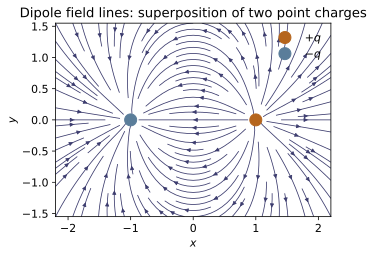
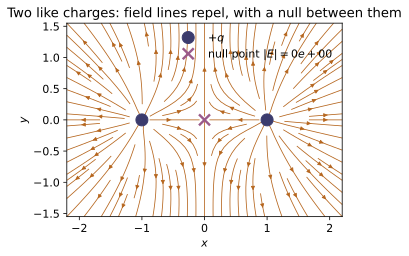
Example problems
A ring of radius $R$ carries uniform line charge with total charge $Q$. Show the field at height $z$ on the axis is $$E_z=\frac{1}{4\pi\varepsilon_0}\frac{Qz}{(z^2+R^2)^{3/2}},$$ purely axial by symmetry, and that for $z\gg R$ it reduces to the point charge $kQ/z^2$. Check: build the ring as many small coulomb_field charges and compare field_magnitude on the axis to the formula; confirm the far-field monopole limit.
By symmetry the transverse field of each ring element cancels against the element diametrically opposite, leaving only $E_z$. An element $dq$ lies a distance $\eta=\sqrt{z^2+R^2}$ from the field point, and its axial projection is $\cos\theta=z/\eta$:
Every element shares the same $z,R$, so $\int dq=Q$ factors out, giving $E_z=\dfrac{1}{4\pi\varepsilon_0}\dfrac{Qz}{(z^2+R^2)^{3/2}}$. For $z\gg R$, $(z^2+R^2)^{3/2}\to z^3$ and $E_z\to kQ/z^2$. Building the ring from $N=400$ point charges, field_magnitude on the axis returns $E_z=8.5634\times10^{2}$ V/m — matching the formula to all digits (transverse parts $\sim10^{-14}$) — and at $z=2\,\mathrm{m}\gg R$ it reproduces $kQ/z^2$.
Two charges $+q$ sit at $x=\pm a$. Show E = 0 at the origin. Replace one with $-q$ (a dipole, p along $-\hat x$): show the origin field no longer vanishes and that on the $y$-axis (the perpendicular bisector) E points along $+\hat x$, antiparallel to p. Check: coulomb_field([(q,(-a,0,0)),(±q,(a,0,0))]) at (0,0,0) and (0,a,0).
Two equal charges: at the origin each field has magnitude $kq/a^2$ and points away from its source (along $\mp\hat x$), so they cancel — $\mathbf E(\mathbf 0)=\mathbf 0$. Replacing the charge at $x=+a$ by $-q$ makes a dipole with moment $\mathbf p=\sum_i q_i\mathbf r_i'=q(-a\hat x)+(-q)(a\hat x)=-2qa\,\hat x$. Now both fields point along $+\hat x$ at the origin (away from $+q$, toward $-q$) and add:
On the bisector at $(0,a,0)$ the $y$-components cancel and the $x$-components add to $\mathbf E=\dfrac{kq}{\sqrt2\,a^2}\hat x=6.355\times10^{4}\,\hat x$ V/m — along $+\hat x$, antiparallel to $\mathbf p$. These match coulomb_field(...) at (0,0,0) and (0,a,0).
A straight segment $-L\le z'\le L$ carries uniform $\lambda$. Find $E$ a distance $s$ from the midpoint, in the perpendicular bisector plane, and show that as $L\to\infty$ it tends to $E=\lambda/2\pi\varepsilon_0 s$ (the result Gauss's law gives instantly in ~EM-02). Check: approximate the segment with field_of_distribution on a thin box (or many point charges) and compare to the closed form.
Place the segment on the $z'$-axis and the field point at $(s,0,0)$ in the bisector plane. The element $dq=\lambda\,dz'$ lies a distance $\eta=\sqrt{s^2+z'^2}$ away; the $z$-components cancel in pairs, leaving the $s$-component weighted by $\cos\theta=s/\eta$:
As $L\to\infty$, $2L/\sqrt{s^2+L^2}\to2$, so $E_s\to\dfrac{\lambda}{2\pi\varepsilon_0\,s}$ — the infinite-line result Gauss's law gives instantly in ~EM-02. Modelling the segment as a thin box of point charges, field_of_distribution reproduces this closed form and tends to $\lambda/2\pi\varepsilon_0 s$ as $L$ grows.
Prove directly from Eq. 2.4 that $\nabla\times\mathbf E=\mathbf 0$ for a point charge, hence (by superposition) for any electrostatic field. Check: curl(E) (MA-02) on point_charge_field(q) is zero relative to the gradient scale $|\mathbf E|/r$ — the property ~EM-03 exploits to define the potential.
Write the point-charge field as a purely radial field, $\mathbf E=kq\,\dfrac{\hat{\boldsymbol\eta}}{\eta^2}=kq\,\dfrac{\boldsymbol\eta}{\eta^3}$ with $\boldsymbol\eta=\mathbf r-\mathbf r'$. For any radial $f(\eta)\,\boldsymbol\eta$,
since $\hat{\boldsymbol\eta}\times\boldsymbol\eta=\mathbf 0$ (parallel vectors) and $\nabla\times\boldsymbol\eta=\mathbf 0$. So one point charge is irrotational; by superposition (Eq. 2.4) the curl of the sum is the sum of the curls, hence $\nabla\times\mathbf E=\mathbf 0$ for every electrostatic field. Numerically curl(E) on point_charge_field(q) returns $|\nabla\times\mathbf E|/(|\mathbf E|/r)=9.4\times10^{-10}$ — zero to finite-difference precision — the property ~EM-03 exploits to write $\mathbf E=-\nabla V$.
For any localized charge cloud of total charge $Q$, argue from Eq. 2.8 that at distances large compared with its size the field approaches $kQ/r^2\,\hat{\mathbf r}$ (the shell theorem / leading multipole). Check: field_of_distribution for a uniformly charged cube of charge $Q$, evaluated at $r\gg L$, matches $kQ/r^2$ to fractions of a percent — and the same limit underlies ~EM-05.
In Eq. 2.8, $\mathbf E(\mathbf r)=\dfrac{1}{4\pi\varepsilon_0}\displaystyle\int \frac{\hat{\boldsymbol\eta}}{\eta^2}\,\rho(\mathbf r')\,d\tau'$ with $\boldsymbol\eta=\mathbf r-\mathbf r'$. If the cloud has size $\sim L$ and the field point sits at $r\gg L$, then $|\mathbf r'|\ll r$ for every source point, so $\eta\to r$ and $\hat{\boldsymbol\eta}\to\hat{\mathbf r}$ uniformly. The slowly varying factor pulls out of the integral:
Only the total charge $Q$ survives — the monopole / shell-theorem term, leading order of ~EM-05. For the uniform cube ($Q=8.00\times10^{-12}$ C) at $r=0.2$ m, field_of_distribution returns $|\mathbf E|=1.7975$ V/m versus $kQ/r^2=1.7975$ V/m — agreement to the quoted digits.
Run the worked code: cd EM/EM-01_electrostatics/code && python3 electrostatics.py
EM-02 — Gauss's Law
Electricity & Magnetism trunk · EM/EM-02_gauss_law · open in the Teaching Network
The content of Griffiths §2.2. Gauss's law says the electric flux of E out of any closed surface equals the enclosed charge over ε₀, ∮E·da = Q_enc/ε₀ (integral form), equivalently ∇·E = ρ/ε₀ (the local form). With enough symmetry it hands you the field in one line — the sphere, line, and plane of §2.2.3. The other half of the electrostatic field, ∇×E = 0 (§2.2.4), is established in ~EM-01 and exploited in ~EM-03; here it just rounds out the picture.
The organizing computation: feed ~EM-01's point-charge field straight into ~MA-02's surface_flux, and the inverse-square law makes the flux through any enclosing surface come out to q/ε₀ — independent of the surface's size or shape — while a charge outside nets zero. That surface-independence is Gauss's law: no new physics beyond Coulomb, just the divergence theorem. SI units throughout; a field is the same E(x, y, z) -> (Ex, Ey, Ez) function convention as EM-01/MA-02, so MA-02's operators act on it with no glue code.
Key equations
Figures
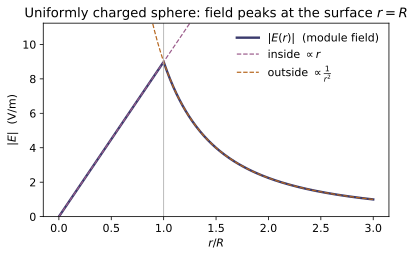
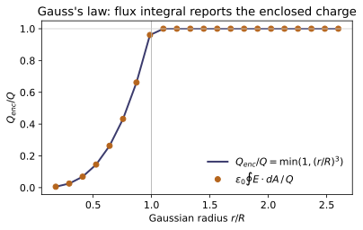
Example problems
A point charge $q$ sits inside a closed surface. Show that the outward electric flux is $$\oint_{\mathcal S}\mathbf E\cdot d\mathbf a=\frac{q}{\varepsilon_0},$$ independent of the size or shape of the surface, and that a charge placed outside contributes zero net flux. Check: flux_through_sphere(point_charge_field(q)) at several radii (each gives q/EPS0), enclosed_charge reads $q$ back, and a charge at $(3,0,0)$ outside an $R=1$ sphere returns ~0.
Centre a sphere of radius $r$ on the charge. With $\mathbf E=\frac{1}{4\pi\varepsilon_0}\frac{q}{r^2}\hat{\mathbf r}$ and $d\mathbf a=r^2\sin\theta\,d\theta\,d\varphi\,\hat{\mathbf r}$, the two factors of $r^2$ cancel:
The radius drops out, so the flux is identical through any enclosing surface (field lines are unbroken in charge-free space); a charge placed outside contributes nothing, since every line that enters the surface also leaves it. Hence $\Phi_E=q/\varepsilon_0$, independent of size and shape. (flux_through_sphere gives $\varepsilon_0\Phi_E=q=10^{-9}$ C at $R=0.1,0.5,2$ m, enclosed_charge reads $q$ back, and the charge at $(3,0,0)$ returns $\sim2\times10^{-15}\approx0$.)
A sphere of radius $R$ carries total charge $Q$ at uniform density. With a concentric Gaussian sphere, show $$E(r)=\frac{1}{4\pi\varepsilon_0}\frac{Q}{r^2}\ (r\ge R),\qquad E(r)=\frac{1}{4\pi\varepsilon_0}\frac{Q\,r}{R^3}\ (r<R),$$ continuous at $r=R$ — point-charge-like outside, linear inside. Check: uniform_sphere_field(Q, R); compare field_magnitude at $r=3R$ and $r=R/2$ to the two formulas and confirm continuity across $r=R$.
Symmetry forces $\mathbf E=E(r)\hat{\mathbf r}$, so a concentric Gaussian sphere of radius $r$ gives $\oint\mathbf E\cdot d\mathbf a=E(r)\,4\pi r^2=Q_{\text{enc}}/\varepsilon_0$. Outside ($r\ge R$) the surface encloses all of $Q$:
the point-charge field. Inside ($r<R$) only the fraction $(r/R)^3$ of the uniform charge lies within, $Q_{\text{enc}}=Q(r/R)^3$:
At $r=R$ both branches give $kQ/R^2$, so $E$ is continuous. For $Q=2$ nC, $R=0.1$ m, field_magnitude returns $199.7$ V/m at $r=3R$ ($=kQ/9R^2$) and $898.8$ V/m at $r=R/2$ ($=kQ/2R^2$), matching the two formulas, and both branches meet at $kQ/R^2=1797.5$ V/m across $r=R$.
An infinite line carries uniform $\lambda$. With a coaxial Gaussian cylinder of radius $s$ and length $\ell$ (only the curved wall carries flux), show $$\mathbf E=\frac{\lambda}{2\pi\varepsilon_0 s}\,\hat{\mathbf s},$$ purely radial and falling off as $1/s$ — the field ~EM-01 reached only as the $L\to\infty$ limit of a finite segment. Check: line_charge_field(lam); verify field_magnitude $\propto 1/s$ and that the axial component vanishes off-axis.
Cylindrical symmetry makes $\mathbf E=E(s)\hat{\mathbf s}$, radial and the same all along and around the axis. On a coaxial cylinder of radius $s$ and length $\ell$ the flat caps carry no flux ($\mathbf E\perp\hat{\mathbf n}$), and the curved wall (area $2\pi s\ell$) has $\mathbf E\parallel d\mathbf a$:
The length cancels, leaving
purely radial and falling as $1/s$. For $\lambda=2$ nC/m, field_magnitude of line_charge_field gives $359.5$ V/m at $s=0.1$ m and $179.8$ V/m at $s=0.2$ m — a clean factor-of-two $1/s$ drop — while the axial component $E_z=0$ off-axis, confirming the field is exactly radial.
An infinite plane carries uniform $\sigma$. With a Gaussian pillbox straddling the sheet, show the field is uniform, $$\mathbf E=\frac{\sigma}{2\varepsilon_0}\,\hat{\mathbf n},$$ pointing away on both sides, so it is discontinuous by $\sigma/\varepsilon_0$ across the sheet (the boundary condition of ~EM-03). Check: plane_sheet_field(sigma); confirm the magnitude is distance-independent and the jump $E_z(0^+)-E_z(0^-)=\sigma/\varepsilon_0$.
By symmetry the field points straight away from the sheet with equal magnitude on each side, $\mathbf E=\pm E\,\hat{\mathbf n}$. A pillbox of face area $A$ straddling the sheet catches flux only through its two faces (the field grazes the side walls):
No $A$ and no distance survive, so the field is uniform. It reverses across the sheet, so the normal component jumps by
For $\sigma=1$ nC/m², plane_sheet_field returns the distance-independent $56.5$ V/m on either side and a jump of $112.9$ V/m $=\sigma/\varepsilon_0$ across $z=0$.
From the integral law and the divergence theorem, derive $\nabla\cdot\mathbf E=\rho/\varepsilon_0$, and verify it on the uniform sphere of P2: $\nabla\cdot\mathbf E=\rho/\varepsilon_0$ inside and $0$ outside. Note the companion curl law $\nabla\times\mathbf E=\mathbf 0$ (Gr §2.2.4, p.77), checked in ~EM-01. Check: gauss_residual(uniform_sphere_field(Q,R), rho, point) with $\rho=Q/\tfrac{4}{3}\pi R^3$ returns ~0 at an interior point (it is normalized by $\rho/\varepsilon_0$).
Write $Q_{\text{enc}}=\int_{\mathcal V}\rho\,d\tau$ and convert the flux with the divergence theorem (~MA-02):
Since this holds for every volume, the integrands match: $\nabla\cdot\mathbf E=\rho/\varepsilon_0$. On the P2 sphere, inside $\mathbf E=\tfrac{kQ}{R^3}\mathbf r$ (with $\mathbf r=(x,y,z)$), so
outside, the inverse-square $\mathbf E=kQ\hat{\mathbf r}/r^2$ has $\nabla\cdot\mathbf E=0$. The companion $\nabla\times\mathbf E=\mathbf 0$ completes the pair. Hence gauss_residual with $\rho=Q/\tfrac43\pi R^3$ returns $\sim1.4\times10^{-13}$ at the interior point — zero up to the finite-difference truncation, confirming $\nabla\cdot\mathbf E=\rho/\varepsilon_0$.
Run the worked code: cd EM/EM-02_gauss_law/code && python3 gauss_law.py
EM-03 — Electric Potential
Electricity & Magnetism trunk · EM/EM-03_electric_potential · open in the Teaching Network
Because the electrostatic field is curl-free (∇×E = 0, the closing result of ~EM-02), it is the gradient of a single scalar — the potential V. This module builds V and shows that the three MA-02 operators connecting V and E are exact inverses: integrate the field to get the potential, V = −∫E·dl (line_integral, Eq. 2.21); differentiate the potential to recover the field, E = −∇V (gradient, Eq. 2.23); and in vacuum the potential obeys Laplace's equation ∇²V = 0 (laplacian, Eq. 2.25), with Poisson's ∇²V = −ρ/ε₀ (Eq. 2.24) where charge sits. Because V is a scalar, superposition is ordinary addition — the easier road to the field of ~EM-01.
V is returned as a scalar field function V(x, y, z) -> float — exactly the MA-02 convention for scalar fields — so gradient and laplacian act on it with no glue code, and an EM-01 field E(x,y,z) -> (Ex,Ey,Ez) drops straight into line_integral. The round trips are checked here: field_from_potential(potential_of_charge(q)) reproduces the exact EM-01 Coulomb field, and potential_from_field(point_charge_field(q)) recovers the potential difference path-independently (the curl-free property is exactly what licenses the straight-line path). SI units throughout; a charge is a pair (q, position).
Key equations
Figures
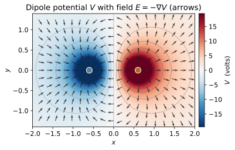
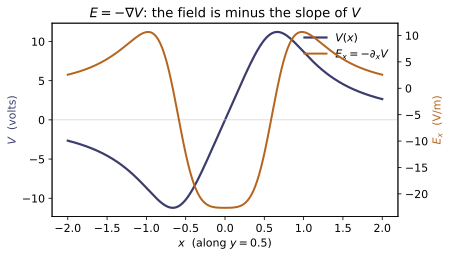
Example problems
From $V(\mathbf r)=-\int_\infty^{\mathbf r}\mathbf E\cdot d\mathbf l$ with the Coulomb field, show the potential of a point charge $q$ at the origin is $$V(r)=\frac{1}{4\pi\varepsilon_0}\frac{q}{r},$$ then take $-\nabla V$ in spherical coordinates and recover $\mathbf E=(1/4\pi\varepsilon_0) (q/r^2)\hat{\mathbf r}$ — the two operations invert. Check: potential_of_charge(q) equals $kq/r$ at several radii, and field_from_potential of it matches point_charge_field(q) componentwise.
The Coulomb field is radial, $\mathbf E=\frac{1}{4\pi\varepsilon_0}\frac{q}{r^2}\hat{\mathbf r}$, so integrating in from infinity along a radial path ($d\mathbf l=dr\,\hat{\mathbf r}$):
Inverting with $\mathbf E=-\nabla V$ (here $V$ depends only on $r$):
recovering the EM-01 field — the integral and the gradient invert each other. Numerically potential_of_charge(q) gives $V(0.5)=35.9502\text{ V}=kq/r$, and field_from_potential returns $(102.944,\,68.629,\,-34.315)$ at $(0.3,0.2,-0.1)$, matching point_charge_field(q).
Using $\nabla\times\mathbf E=\mathbf 0$, argue $\oint\mathbf E\cdot d\mathbf l=0$, so that $$V(\mathbf b)-V(\mathbf a)=-\int_{\mathbf a}^{\mathbf b}\mathbf E\cdot d\mathbf l$$ does not depend on the path chosen between $\mathbf a$ and $\mathbf b$. Confirm this for a point-charge field by evaluating the drop between two points along two different routes. Check: build potential_from_field(E, reference=...) with two different reference points and verify $V(\mathbf p_1)-V(\mathbf p_2)$ is the same for both (they differ only by an overall constant).
For any electrostatic field $\nabla\times\mathbf E=\mathbf 0$, so Stokes' theorem gives $\oint\mathbf E\cdot d\mathbf l=\int(\nabla\times\mathbf E)\cdot d\mathbf a=0$ around every closed loop. Split a loop into a forward path $\mathcal C_1$ and a return $\mathcal C_2$ between the same endpoints:
so $V(\mathbf b)-V(\mathbf a)=-\int_{\mathbf a}^{\mathbf b}\mathbf E\cdot d\mathbf l$ depends only on the endpoints. Shifting the reference point adds the same constant to $V(\mathbf p_1)$ and $V(\mathbf p_2)$, leaving the difference fixed. Two different references give the drop $12.0903$ V vs $12.0904$ V — equal up to the finite-step ($n=4000$) integration error — confirming path-independence.
For $+q$ at $(-a,0,0)$ and $-q$ at $(a,0,0)$, write $V$ as the scalar sum of the two $q/\eta$ terms. Show $V$ is odd under $x\to-x$, so the entire plane $x=0$ is at $V=0$, and that for $r\gg a$ it reduces to the dipole form $V\approx(1/4\pi\varepsilon_0)\,\mathbf p\cdot\hat{\mathbf r}/r^2$ with $\mathbf p=2qa\,\hat{\mathbf x}$ (the leading term of ~EM-05). Check: potential_point_charges([(q,(-a,0,0)),(-q,(a,0,0))]) gives $V=0$ on the $x=0$ plane and $V(x,\cdot)=-V(-x,\cdot)$.
The scalar sum of the two $q/\eta$ terms is
where $\eta_+$ is the distance to $+q$ at $(-a,0,0)$. Under $x\to-x$, $\eta_+\leftrightarrow\eta_-$, so $V\to-V$ — odd — and on the plane $x=0$ (where $\eta_+=\eta_-$) it vanishes identically. For $r\gg a$, expand $1/\eta_\pm\approx\frac1r\mp\frac{a x}{r^3}$:
a dipole of magnitude $2qa$ pointing from the $-q$ toward the $+q$ charge (the leading ~EM-05 term). On the $+x$ axis $V<0$ — you sit nearer $-q$ — matching potential_point_charges(...), which returns $0$ on the $x=0$ plane and $V(0.2)=-47.93\text{ V}=-V(-0.2)$.
Show the point-charge potential satisfies $\nabla^2V=0$ everywhere off the source by computing the spherical Laplacian of $1/r$. (This is why $1/r$ — not the field $1/r^2$ — is the harmonic object.) Check: poisson_residual(V, 0.0, point) is $\approx 0$ at points away from the charge — the finite-difference residual normalized by the curvature scale $|V|/L^2$.
Off the source $\rho=0$, so Poisson reduces to Laplace, $\nabla^2V=0$. For $V\propto1/r$ use the radial part of the spherical Laplacian, $\nabla^2 f=\frac{1}{r^2}\frac{d}{dr}\!\left(r^2\frac{df}{dr}\right)$:
So the point-charge potential is harmonic everywhere off the charge — it is $1/r$, not the field's $1/r^2$, that solves Laplace's equation. The code confirms it: poisson_residual(V, 0.0, point) returns $-6.4\times10^{-8}$, zero to finite-difference truncation error.
Where $\rho\neq0$ the potential obeys $\nabla^2V=-\rho/\varepsilon_0$. Take the quadratic bowl $V(\mathbf r)=A\,(x^2+y^2+z^2)$, compute $\nabla^2V=6A$, and identify the uniform charge density $\rho=-6A\varepsilon_0$ it represents. Check: poisson_residual(V, rho, point) is $\approx 0$ when rho $=-6A\varepsilon_0$, and is nonzero if you wrongly feed rho=0.0 — the residual is the diagnostic that the source matches the curvature of $V$.
For the quadratic bowl $V=A(x^2+y^2+z^2)$ each second derivative is constant, $\partial_x^2V=\partial_y^2V=\partial_z^2V=2A$, so
Poisson's equation $\nabla^2V=-\rho/\varepsilon_0$ then forces a uniform source $\rho=-\varepsilon_0\nabla^2V=-6A\varepsilon_0$. Feeding this into poisson_residual(V, rho, point) gives $\approx-3\times10^{-9}$ (zero up to truncation), whereas the wrong rho=0.0 returns $6.0$: the residual $\nabla^2V+\rho/\varepsilon_0$ normalized by the curvature scale $|V|/L^2=A$ equals $6A/A=6$, exactly diagnosing the missing source.
Run the worked code: cd EM/EM-03_electric_potential/code && python3 electric_potential.py
EM-04 — Boundary-Value Problems
Electricity & Magnetism trunk · EM/EM-04_boundary_value_problems · open in the Teaching Network
One equation, Laplace's equation ∇²V = 0 (Gr §3.1, the source-free case of ~EM-03's Poisson equation), with the potential pinned by boundary data. The whole subject is how to solve it, and the uniqueness theorems (§3.1.5–3.1.6) are the licence: any potential that obeys ∇²V = 0 in the region and matches the boundary is the solution, however you found it. Three ways to find it:
1. Method of images (§3.2) — replace a grounded conductor by fictitious image charges that reproduce its boundary condition. The classic case: a point charge q a height d above a grounded plane → image −q at −d. 2. Separation of variables / Fourier series (§3.3) — the semi-infinite slot, solved as a Fourier sine series (Eq. 3.34) and summed in closed form (Eq. 3.36); the code carries both so the series can be checked against the closed form. The orthogonality behind the Fourier step is ~MA-11. 3. Relaxation (§3.1.5) — iterate the discrete Laplace equation (each node → the average of its neighbours) to the one potential the boundary allows: a numerical demonstration of the uniqueness theorem.
SI units throughout; potentials are returned as functions V(x, y, z) (images) or V(x, y) (slot), the same convention as ~EM-03.
Key equations
Figures
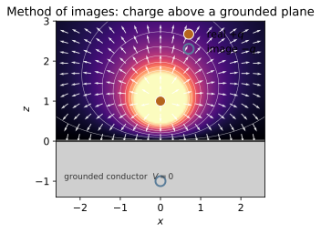
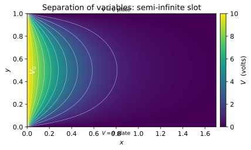
Example problems
A point charge $q$ is held a height $d$ above an infinite grounded conducting plane $z=0$. Replace the conductor by an image $-q$ at $(0,0,-d)$ and write the potential for $z>0$, $$V(x,y,z)=\frac{1}{4\pi\varepsilon_0}\left[\frac{q}{\sqrt{x^2+y^2+(z-d)^2}}-\frac{q}{\sqrt{x^2+y^2+(z+d)^2}}\right].$$ Show $V=0$ everywhere on $z=0$, that $\nabla^2V=0$ for $z>0$ (off the charge), and argue from the first uniqueness theorem that this is the potential. Check: image_potential_plane(q, d) evaluated at several $(x,y,0)$ returns $0$; image_field_plane gives the matching $\mathbf E=-\nabla V$.
On the plane $z=0$ both radicals reduce to the same value $\sqrt{x^2+y^2+d^2}$, so the bracket is $q/\sqrt{x^2+y^2+d^2}-q/\sqrt{x^2+y^2+d^2}=0$ and $V\equiv0$ there. Each term is a Coulomb potential $\propto1/r$, satisfying $\nabla^2(1/r)=0$ away from its source; the image sits at $(0,0,-d)$, outside the region $z>0$, so $\nabla^2V=0$ everywhere in the upper half-space except at the real charge. This candidate has the correct $1/r$ singularity at $q$, solves Laplace's equation, vanishes on $z=0$, and $\to0$ at infinity. By the first uniqueness theorem the boundary data fix the solution, so this is the potential for $z>0$. Hence image_potential_plane(q, d) returns $0$ at every $(x,y,0)$ and image_field_plane gives the matching $\mathbf E=-\nabla V$.
From the solution of P1, compute the induced density $\sigma=-\varepsilon_0\,\partial V/\partial z\big|_{z=0}$ and obtain $$\sigma(x,y)=\frac{-q\,d}{2\pi\,(x^2+y^2+d^2)^{3/2}} .$$ Show $|\sigma|$ peaks directly beneath the charge and decays as the cube of the distance, then integrate over the whole plane to prove $\int\sigma\,da=-q$ (use polar coordinates, $da=2\pi s\,ds$). Check: induced_surface_charge(q, d) is most negative at the origin and shrinks outward, and total_induced_charge(q, d) $\approx -q$.
Differentiate the P1 potential in $z$; with $r_\mp^2=x^2+y^2+(z\mp d)^2$ the distances to the real ($-$) and image ($+$) charges,
Then $\sigma=-\varepsilon_0\,\partial V/\partial z|_{z=0}=-qd\big/\bigl[2\pi(x^2+y^2+d^2)^{3/2}\bigr]$, most negative directly under $q$ (at $s=0$) and dying as $s^{-3}$. Integrating over the plane in polar rings $da=2\pi s\,ds$ (with $s^2=x^2+y^2$),
so the entire image charge reappears as real induced charge. Numerically induced_surface_charge peaks at $\sigma(0,0)=-1.59\times10^{-8}$ C/m² and shrinks outward, while total_induced_charge $=-1.006\times10^{-9}\approx-q$.
Show that the conductor attracts $q$ exactly as the image charge would — a force toward the plane, $$\mathbf F=-\frac{1}{4\pi\varepsilon_0}\frac{q^2}{(2d)^2}\,\hat{\mathbf z},$$ the Coulomb attraction of $q$ and $-q$ across separation $2d$. Then explain why the energy is half that of a real $q,-q$ pair (only $z>0$ holds field). Check: image_force(q, d) is negative (attractive) and equals $-\,$K_E$\,q^2/(2d)^2$.
In the region $z>0$ the real field is identical to that of $q$ at $+d$ together with the image $-q$ at $-d$, so the force on $q$ is simply its Coulomb attraction to that image, a distance $2d$ away:
directed toward the plane. The energy is not that of a real pair, however: the image field exists only in $z>0$, which holds just half of the $q$–image field energy. Integrating this force in from infinity (equivalently, halving the pair energy $-kq^2/2d$) gives
half of $-kq^2/2d$. Numerically image_force(q, d) $=-2.247\times10^{-7}$ N $=-k\,q^2/(2d)^2$ (with $k=$ K_E) — negative, i.e. attractive toward the conductor.
Grounded plates lie at $y=0$ and $y=a$; the strip at $x=0$ is held at $V_0$ and the slot runs to $x\to\infty$. By separation of variables and a Fourier sine expansion of the $x=0$ condition, derive $$V(x,y)=\frac{4V_0}{\pi}\sum_{n=1,3,5,\dots}\frac1n\,e^{-n\pi x/a}\sin\frac{n\pi y}{a} =\frac{2V_0}{\pi}\arctan\!\left(\frac{\sin(\pi y/a)}{\sinh(\pi x/a)}\right).$$ Verify the closed form vanishes on $y=0,a$, dies as $x\to\infty$, and tends to $V_0$ at the mouth. Check: slot_potential_series(V0, a) and slot_potential_closed(V0, a) agree to $\sim10^{-4}$ across the interior, and the closed form returns $0$ on the grounded plates.
Separating $V=X(x)Y(y)$ turns $\nabla^2V=0$ into $X''/X=-Y''/Y=k^2$. The grounded plates $V(x,0)=V(x,a)=0$ select $Y=\sin(n\pi y/a)$ with $k=n\pi/a$, and decay as $x\to\infty$ picks $X=e^{-n\pi x/a}$. Imposing the mouth condition $V(0,y)=V_0$ is a Fourier sine problem; sine orthogonality gives $C_n=\tfrac2a\int_0^a V_0\sin\tfrac{n\pi y}{a}\,dy=4V_0/n\pi$ for odd $n$ and $0$ for even, so
Summing with $\sum_{n\,\text{odd}}\tfrac{w^n}{n}=\tfrac12\ln\tfrac{1+w}{1-w}$ at $w=e^{-\pi(x-iy)/a}$ and taking the imaginary part collapses this to
On $y=0,a$ the numerator vanishes so $V=0$; as $x\to\infty$, $\sinh\to\infty$ so $V\to0$; as $x\to0^+$ the ratio $\to\infty$ and $\arctan\to\tfrac\pi2$, giving $V\to V_0$. The two forms agree to $\sim10^{-4}$ (e.g. $V(0.3,0.5)=4.731$ both ways), and slot_potential_closed returns $0$ on $y=0$ and $\sim10^{-16}$ on $y=a$ — the grounded plates.
A harmonic function equals the average of its neighbours, so on a grid each interior node satisfies $V_{i,j}=\tfrac14(V_{i+1,j}+V_{i-1,j}+V_{i,j+1}+V_{i,j-1})$. Argue that iterating this update from any starting guess converges to the single potential fixed by the boundary (the first uniqueness theorem). Take the boundary potential $V=V_0\,x/L$, which is linear and therefore harmonic, and predict the interior. Check: solve_laplace_2d(lambda x, y: 10.0*x) relaxes to $V=10x$ at every interior node, independent of the initial interior values.
Discretizing $\nabla^2V=0$ with the 5-point Laplacian gives $V_{i+1,j}+V_{i-1,j}+V_{i,j+1}+V_{i,j-1}-4V_{i,j}=0$, i.e. the mean-value property
Each Gauss–Seidel sweep overwrites every interior node with its neighbour-average while the boundary stays pinned. Any error field is itself discrete-harmonic and zero on the boundary, so by the discrete maximum principle it can have no interior extremum and must vanish — the iteration contracts to the one interior consistent with the boundary, exactly the first uniqueness theorem. For boundary data $V=V_0x/L$, the linear $V=V_0x/L$ is harmonic ($\partial_x^2=\partial_y^2=0$) and already obeys the averaging, so it is that unique interior. Hence solve_laplace_2d(lambda x, y: 10.0*x) relaxes to $V(0.65,0.35)=6.500=10\times0.65$ at every node, independent of the zeroed initial guess.
Run the worked code: cd EM/EM-04_boundary_value_problems/code && python3 boundary_value.py
EM-05 — Multipole Expansion
Electricity & Magnetism trunk · EM/EM-05_multipole_expansion · open in the Teaching Network
Seen from far enough away, any localized charge cloud looks like a point charge; look a little closer and the leading correction looks like a dipole, then a quadrupole. The multipole expansion makes this precise: the potential of a bounded distribution is a power series in $1/r$ (Gr Eq. 3.95, §3.4.1, p.151), $V=\tfrac{1}{4\pi\varepsilon_0}\!\left[\tfrac{Q}{r}+\tfrac{\mathbf p\cdot\hat{\mathbf r}}{r^{2}}+\tfrac{(\text{quadrupole})}{r^{3}}+\dots\right]$ — the monopole ($1/r$, total charge $Q$), dipole ($1/r^2$, moment p), quadrupole ($1/r^3$), … terms. Each successive term is smaller by one more factor of $(\text{size}/r)$, so adding a term cuts the truncation error by another power of $(\text{size}/r)$. For a neutral object ($Q=0$) the monopole vanishes and the dipole term dominates the far field.
The module computes the moments (monopole_moment, dipole_moment, quadrupole_moment), the pure-dipole potential and field (dipole_potential, dipole_field), and the truncated series itself (multipole_potential), comparing each against the exact ~EM-03 potential potential_point_charges (and the ~EM-01 field) as $r$ grows. Charges keep the ~EM-01 convention — a charge is a pair (q, position) — and moments are taken about the coordinate origin. dipole_potential/dipole_field return field functions V(x,y,z) and E(x,y,z) -> (Ex,Ey,Ez) in the MA-02 style, so MA-02's curl/divergence act on them with no glue code. SI units throughout.
Key equations
Figures
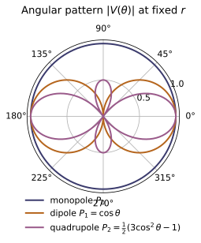
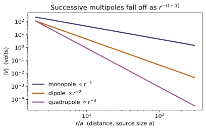
Example problems
Place $+q$ at $+\tfrac{a}{2}\hat{\mathbf z}$ and $-q$ at $-\tfrac{a}{2}\hat{\mathbf z}$. Show the system is neutral ($Q=0$) and has dipole moment $\mathbf p=qa\,\hat{\mathbf z}$, pointing from the $-$ charge to the $+$ charge. Hence show the far field reduces to $$V_{\text{dip}}(r,\theta)=\frac{1}{4\pi\varepsilon_0}\frac{qa\cos\theta}{r^{2}},$$ and that this captures the exact two-charge potential once $r\gg a$. Check: monopole_moment returns $0$ and dipole_moment returns $(0,0,qa)$; dipole_potential(p) and multipole_potential(dip, lmax=1) both track potential_point_charges (~EM-03) to a fraction of a percent at $r=100a$.
The two charges sum to $Q=q+(-q)=0$, so the cloud is neutral. The dipole moment (Gr Eq. 3.98) is $\mathbf p=\sum_a q_a\mathbf r'_a=q(\tfrac a2\hat{\mathbf z})+(-q)(-\tfrac a2\hat{\mathbf z})=qa\,\hat{\mathbf z}$, pointing from $-q$ to $+q$. With $Q=0$ the monopole term drops and the $n=1$ term leads; using $P_1(\cos\alpha)=\cos\alpha$ and $\mathbf p\cdot\hat{\mathbf r}=qa\cos\theta$,
For $q=10^{-9},\,a=0.01$ this is $\mathbf p=(0,0,10^{-11})$ C·m. On the axis at $r=100a$ the dipole term gives $V=8.9876\times10^{-2}$ V against the exact $8.9878\times10^{-2}$ V — agreement to $2\times10^{-5}$, matching monopole_moment$=0$, dipole_moment$=(0,0,qa)$, and multipole_potential(dip,1)$\approx$potential_point_charges.
For the same dipole, argue that the monopole term ($n=0$) gives $V\approx0$ (neutral), so the leading contribution is the $1/r^{2}$ dipole term. Show the truncation error after the $\ell$-th term scales as $(a/r)^{\ell+1}$, and estimate how far out (in units of $a$) the dipole approximation is good to $1\%$. Check: at $r=30a$, compare multipole_potential(dip, 0) (monopole only) and multipole_potential(dip, 1) (+dipole) against potential_point_charges; the dipole-order error is below $1\%$ and strictly smaller than the monopole-order error.
Since $Q=0$, the $n=0$ term is $V_{\text{mono}}=kQ/r=0$ — it captures none of the potential, so its relative error is exactly $100\%$. Each added term costs another factor $r'/r\lesssim a/r$, so truncating after the $\ell$-th term leaves a relative error $\sim(a/r)^{\ell+1}$. For the dipole ($\ell=1$) that is $(a/r)^{2}$; setting $(a/r)^{2}\lesssim0.01$ gives $r\gtrsim10a$. At $r=30a$ the measured monopole error is $1.0$ and the dipole-order error is $2.78\times10^{-4}$ ($0.028\%$) — strictly smaller and far under $1\%$. (The symmetric pair's even moments vanish, so the leading omitted term is the octupole and the error falls as $(a/2r)^{2}=2.78\times10^{-4}$ at $r=30a$, exactly the value multipole_potential prints.)
Translate every source by a constant a, $\mathbf r'\to\mathbf r'-\mathbf a$, and prove $$\mathbf p\to\mathbf p-Q\,\mathbf a,$$ so p is independent of the origin exactly when $Q=0$. Verify it concretely on a neutral pair, then take a like-charge pair $(+q,+q)$ and show its dipole moment does shift when the origin moves. Check: dipole_moment is invariant under a translation for the neutral pair but not for the like-charge pair; monopole_moment is the obstruction $Q$ in $\mathbf p-Q\mathbf a$.
Under $\mathbf r'\to\mathbf r'-\mathbf a$,
The shift $-Q\mathbf a$ vanishes iff $Q=0$. For the neutral pair $Q=0$, and translating by $\mathbf a=(0.3,0.2,0.5)$ leaves $\mathbf p=(0,0,10^{-11})$ unchanged. For the like pair $(+q,+q)$, $Q=2q=2\times10^{-9}\neq0$, so $\mathbf p$ moves from $\mathbf 0$ to $-Q\mathbf a=(-6\times10^{-10},-4\times10^{-10},-10^{-9})$. This is exactly what the code shows: dipole_moment is invariant for the neutral pair but shifts by $-$monopole_moment$\cdot\mathbf a$ for the like pair.
From $\mathbf E_{\text{dip}}=\dfrac{1}{4\pi\varepsilon_0 r^{3}}\big[3(\mathbf p\cdot\hat{\mathbf r})\hat{\mathbf r}-\mathbf p\big]$ with $\mathbf p=p\,\hat{\mathbf z}$, show that on the axis ($\hat{\mathbf r}\parallel\mathbf p$) the field is $\mathbf E=2kp/r^{3}$ along p, while on the perpendicular bisector ($\hat{\mathbf r}\perp\mathbf p$) it is $\mathbf E=-kp/r^{3}$, antiparallel and half as strong — the 2 : 1 ratio, with $k=1/4\pi\varepsilon_0$. Where does E point purely radially, and where purely transversely? Check: dipole_field(p) evaluated on the $z$-axis returns $E_z=2kp/r^{3}$, and on the $x$-axis returns $E_z=-kp/r^{3}$.
Write $\mathbf p=p\,\hat{\mathbf z}$, so $\mathbf p\cdot\hat{\mathbf r}=p\cos\theta$. On the axis $\hat{\mathbf r}=\hat{\mathbf z}$ ($\theta=0$):
purely radial and along $\mathbf p$. On the perpendicular bisector $\hat{\mathbf r}\perp\mathbf p$ ($\theta=90^\circ$, $\mathbf p\cdot\hat{\mathbf r}=0$): $\mathbf E=\dfrac{k}{r^{3}}[\,0-p\,\hat{\mathbf z}\,]=-\dfrac{kp}{r^{3}}\hat{\mathbf z}$, antiparallel and half as strong — the $2:1$ ratio. With $p=10^{-11},\,r=0.1$, dipole_field(p) returns $E_z=179.75=2kp/r^{3}$ on the $z$-axis and $E_z=-89.876=-kp/r^{3}$ on the $x$-axis. $\mathbf E$ is purely radial on the axis ($\mathbf E\parallel\hat{\mathbf r}$) and purely transverse on the bisector ($\mathbf E\perp\hat{\mathbf r}$).
Put $+q,\,-2q,\,+q$ at $z=+a,\,0,\,-a$. Show both the monopole ($Q=0$) and the dipole ($\mathbf p=0$) vanish, so the quadrupole is the leading term and the potential falls as $1/r^{3}$. Compute the traceless tensor $Q_{ij}=\sum_a q_a(3r_ir_j-r^{2}\delta_{ij})$ and show $Q_{zz}=4qa^{2}$ with $Q_{xx}=Q_{yy}=-2qa^{2}$ (traceless: $Q_{xx}=Q_{yy}=-\tfrac12 Q_{zz}$). Check: monopole_moment and dipole_moment both return zero, while quadrupole_moment gives $Q[2][2]=4qa^{2}$ and $Q[0][0]=-2qa^{2}$.
Monopole: $Q=q-2q+q=0$. Dipole: $\mathbf p=q(a\hat{\mathbf z})-2q(\mathbf 0)+q(-a\hat{\mathbf z})=\mathbf 0$. Both vanish, so the $n=2$ quadrupole leads and $V\sim1/r^{3}$. The charges sit on the $z$-axis, so $x_a=y_a=0$ and $r_a^{2}=z_a^{2}$. Then
while $Q_{xx}=Q_{yy}=\sum_a q_a(0-z_a^{2})=-2qa^{2}=-\tfrac12 Q_{zz}$ (traceless). With $q=10^{-9},\,a=0.01$: $Q_{zz}=4\times10^{-13}$ and $Q_{xx}=Q_{yy}=-2\times10^{-13}$, matching monopole_moment$=$dipole_moment$=0$ and quadrupole_moment $Q[2][2]=4qa^{2}$, $Q[0][0]=-2qa^{2}$.
Run the worked code: cd EM/EM-05_multipole_expansion/code && python3 multipole.py
EM-06 — Conductors & Capacitance
Electricity & Magnetism trunk · EM/EM-06_conductors_capacitance · open in the Teaching Network
The energy stored in an electrostatic configuration, computed two ways that must agree, together with the electrostatics of conductors and capacitors.
Assembling a charge distribution costs work, and that work can be booked either to the charges — $W=\tfrac12\sum_i q_iV_i$ (Gr Eq. 2.42) — or to the field — $W=\tfrac{\varepsilon_0}{2}\int|\mathbf E|^2\,d\tau$ (Gr Eq. 2.45). The two are the same number; the module pins that down on the distribution both pictures handle analytically, the uniformly charged sphere, whose field comes straight from ~EM-02 and whose energy is $\tfrac35\,kQ^2/R$. There is no new physics in the second form, only a reattribution of the same energy from the charges to the field that the ~EM-01/~EM-02 machinery already produces.
A conductor is an equipotential: E = 0 inside, all net charge on the surface, E just outside normal and of magnitude $\sigma/\varepsilon_0$. That surface charge feels an outward electrostatic pressure $P=\varepsilon_0E^2/2$ (Gr Eq. 2.51). A capacitor is a pair of conductors carrying $\pm Q$; the ratio $C=Q/V$ is fixed by geometry alone (Gr Eq. 2.54 for the parallel plate) and stores $W=\tfrac12CV^2$ — which, written as field energy over the gap, closes the loop back to Eq. 2.45. SI units throughout.
Key equations
Figures
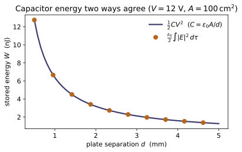
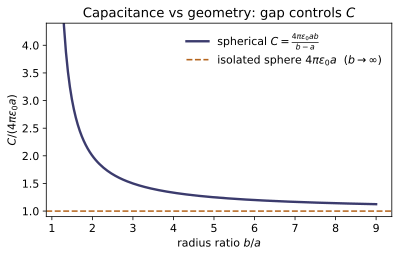
Example problems
Four equal charges $q$ sit at the corners of a square of side $a$. Show that the work to assemble them — four edges of length $a$ and two diagonals of length $a\sqrt2$ — is $$W=\frac{kq^2}{a}\Bigl(4+\sqrt2\Bigr),$$ and explain why no $1/a\to1/0$ self-term appears. Check: work_to_assemble on the four corner charges returns $(kq^2/a)(4+\sqrt2)$; it sums only distinct pairs $i<j$, so each point charge's (infinite) self-energy is omitted by construction.
Use the pairwise form $W=\tfrac12\sum_i q_iV_i=\sum_{i<j}\dfrac{kq_iq_j}{r_{ij}}$. The square has $\binom{4}{2}=6$ distinct pairs: the four edges at separation $a$ and the two diagonals at separation $a\sqrt2$. With all charges equal to $q$,
Because the sum runs only over $i<j$, no term ever has $i=j$, so the divergent $1/r_{ii}=1/0$ self-energy of each point charge never enters. With $q=a=1$ this is $k(4+\sqrt2)=8.988\times10^9\times5.4142=4.866\times10^{10}$ J, exactly what work_to_assemble returns for the four corner charges.
A solid sphere of radius $R$ carries total charge $Q$ uniformly. Using the ~EM-02 field ($E=kQr/R^3$ inside, $kQ/r^2$ outside), evaluate $\tfrac{\varepsilon_0}{2}\int E^2\,d\tau$ over all space, splitting the integral at $r=R$. Show $$W_\text{out}=\tfrac12\frac{kQ^2}{R},\quad W_\text{in}=\tfrac1{10}\frac{kQ^2}{R} \ \Rightarrow\ W=\frac35\frac{kQ^2}{R}.$$ Check: field_energy_spherical on field_magnitude(uniform_sphere_field(Q,R)), integrated from $0$ to a large multiple of $R$, matches self_energy_uniform_sphere(Q,R) to a fraction of a percent (the $1/r^4$ tail is why the outer limit must be pushed far).
With $u=\tfrac{\varepsilon_0}{2}E^2$ and the spherical shell $d\tau=4\pi r^2\,dr$, and using $4\pi\varepsilon_0 k=1$ so that $\tfrac{\varepsilon_0}{2}\,4\pi k^2=\tfrac{k}{2}$:
Adding, $W=\bigl(\tfrac12+\tfrac1{10}\bigr)kQ^2/R=\tfrac35\,kQ^2/R$. Numerically (for $Q=10^{-9}$ C, $R=0.05$ m) self_energy_uniform_sphere gives $1.0785\times10^{-7}$ J, which field_energy_spherical reproduces as $1.0758\times10^{-7}$ J — agreeing to $0.25\%$ once the upper limit is pushed to $\sim2000R$ to capture the slow $1/r^4$ tail.
Plates of area $A$ and gap $d$ are charged to voltage $V$, giving a uniform field $E=V/d$ in the gap. Show the field energy stored in the gap equals the capacitor energy: $$\frac{\varepsilon_0}{2}E^2(Ad)=\frac12\Bigl(\frac{\varepsilon_0A}{d}\Bigr)V^2 =\frac12CV^2 .$$ Check: field_energy of the uniform gap field lambda x,y,z: (0,0,V/d) over the $A\times d$ box equals energy_stored(capacitance_parallel_plate(A,d), V) — and the box quadrature is exact here because the integrand is constant.
The gap field is uniform, $E=V/d$, so the energy density $u=\tfrac{\varepsilon_0}{2}E^2$ is constant and the stored energy is $u$ times the gap volume $Ad$:
Identifying the parallel-plate capacitance $C=\varepsilon_0 A/d$,
so the field picture (Eq. 2.45) and the circuit picture (Eq. 2.55) land on one number. For $A=0.01$ m², $d=1$ mm, $V=12$ V this is $C=88.5$ pF and $\tfrac12CV^2=6.375\times10^{-9}$ J; field_energy over the $A\times d$ box returns the identical $6.375\times10^{-9}$ J — exact here because the constant integrand makes the midpoint quadrature exact.
From $C=Q/V$ with the ~EM-02 fields, derive $C=4\pi\varepsilon_0\,ab/(b-a)$ for concentric spheres (radii $a<b$) and $C=2\pi\varepsilon_0L/\ln(b/a)$ for coaxial cylinders of length $L$. Show the spherical result $\to4\pi\varepsilon_0a$ as $b\to\infty$ — the isolated sphere. Check: capacitance_spherical(a, b) tends to capacitance_isolated_sphere(a) as $b$ grows large, and capacitance_cylindrical increases with $L$ (and with shrinking gap $b/a$).
Place $\pm Q$ on the conductors, integrate the ~EM-02 field across the gap for $V$, and form $C=Q/V$. Spheres ($E=kQ/r^2$ between $a$ and $b$):
As $b\to\infty$, $ab/(b-a)\to a$, recovering the isolated sphere $C=4\pi\varepsilon_0 a$. Cylinders ($E=\lambda/2\pi\varepsilon_0 s$, $\lambda=Q/L$):
which grows with $L$ and with a tighter gap (smaller $\ln(b/a)$). Numerically capacitance_spherical(0.05, b) runs $1.11\times10^{-11}\to5.62\times10^{-12}\to5.564\times10^{-12}$ F for $b=0.1,5,500$ m, closing on capacitance_isolated_sphere(0.05) $=5.563\times10^{-12}$ F; and capacitance_cylindrical rises from $5.06\times10^{-11}$ F at $L=1$ m to $1.01\times10^{-10}$ F at $L=2$ m (and to $8.03\times10^{-11}$ F as the gap tightens to $b=2$ mm).
A conductor carries surface charge density $\sigma$, so $E=\sigma/\varepsilon_0$ just outside and $0$ inside. Argue that the charge sheet feels the average of these fields and hence an outward pressure $$P=\frac{\sigma^2}{2\varepsilon_0}=\frac{\varepsilon_0}{2}E^2 ,$$ independent of the sign of $\sigma$. Apply it to one plate of the P3 capacitor: each plate is pulled toward the other at this pressure. Check: surface_pressure(sigma) returns $\sigma^2/2\varepsilon_0$ and equals $\tfrac{\varepsilon_0}{2}(\sigma/$EPS0$)^2$, the field form of the same result.
The surface layer itself produces the jump from $0$ inside to $\sigma/\varepsilon_0$ outside; the field acting on the layer omits its own contribution and is the average of the two sides, $E_{\text{avg}}=\tfrac12(\sigma/\varepsilon_0+0)=\sigma/2\varepsilon_0$. The force per area is the charge density times this field:
Because it goes as $\sigma^2$ it is positive whatever the sign of $\sigma$, so the pull is always outward, into the field. For one plate of the P3 capacitor ($\sigma=\varepsilon_0 V/d$) this is the attraction toward the opposite plate. Numerically surface_pressure(1e-6) $=5.647\times10^{-2}$ Pa, equal to $\tfrac{\varepsilon_0}{2}(\sigma/\varepsilon_0)^2$ — the same result in field form.
Run the worked code: cd EM/EM-06_conductors_capacitance/code && python3 conductors_capacitance.py
EM-07 — Dielectrics & Polarization
Electricity & Magnetism trunk · EM/EM-07_dielectrics_polarization · open in the Teaching Network
Matter in an electric field polarizes: each atom acquires an induced dipole p = αE (Eq. 4.1), and the dipole moment per unit volume is the polarization P. A polarized object then carries bound charge — perfectly real charge that sources E like any other — with surface density σ_b = P·n̂ (Eq. 4.11) and volume density ρ_b = −∇·P (Eq. 4.12, the divergence taken with ~MA-02). Folding the bound charge into Gauss's law isolates the free charge and defines the electric displacement D = ε₀E + P (Eq. 4.21), whose flux reads back the free charge alone, ∮D·da = Q_free (Eq. 4.23, reusing ~EM-02's flux integral). In a linear dielectric the response is proportional to the field, P = ε₀χ_eE and D = εE with ε = ε₀(1 + χ_e) (Eq. 4.30–4.34).
A polarization or field is carried as a function P(x, y, z) -> (Px, Py, Pz) — the same MA-02 vector-field convention as ~EM-01's E — so MA-02's divergence lands on P and EM-02's flux_through_sphere lands on D with no glue code. SI units throughout; a dielectric is fixed by its dimensionless dielectric constant eps_r = ε_r = ε/ε₀.
Key equations
Figures
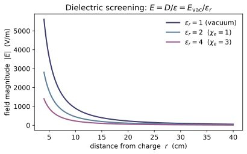
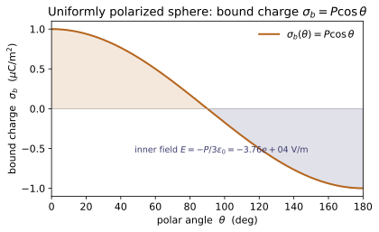
Example problems
A slab fills the region $0\le z\le d$ with uniform polarization $\mathbf P=P\,\hat{\mathbf z}$. Show the bound charge is purely a pair of surface sheets, $\sigma_b=+P$ on the top face ($\hat{\mathbf n}=+\hat{\mathbf z}$) and $\sigma_b=-P$ on the bottom ($\hat{\mathbf n}=-\hat{\mathbf z}$), with $\rho_b=-\nabla\cdot\mathbf P=0$ throughout the interior and zero charge on the sides ($\sigma_b=\mathbf P\cdot\hat{\mathbf n}=0$). Confirm the slab is overall neutral. Check: bound_surface_charge(P, n̂) gives $\pm P$ on the faces and $0$ on a side normal; bound_volume_charge on the uniform field is $0$.
With $\mathbf P=P\,\hat{\mathbf z}$ constant, the bound volume density vanishes everywhere,
so all bound charge sits on the surfaces through $\sigma_b=\mathbf P\cdot\hat{\mathbf n}$. On the top face $\hat{\mathbf n}=+\hat{\mathbf z}$ gives $\sigma_b=P(\hat{\mathbf z}\cdot\hat{\mathbf z})=+P$; on the bottom $\hat{\mathbf n}=-\hat{\mathbf z}$ gives $-P$; on any side $\hat{\mathbf n}\perp\hat{\mathbf z}$ gives $0$. The two sheets carry $\pm P A$ over equal-area faces, so the slab is neutral. With $P=2\times10^{-6}\ \mathrm{C/m^2}$ the code returns $\sigma_b=+2\times10^{-6}$ (top), $-2\times10^{-6}$ (bottom), $0$ (side), and bound_volume_charge $=0$ — the pair-of-sheets picture exactly.
A sphere of radius $R$ carries the "frozen-in" radial polarization $\mathbf P=k\,\mathbf r$ (magnitude growing linearly with radius). Compute the bound volume charge $\rho_b=-\nabla\cdot\mathbf P=-3k$ and the bound surface charge $\sigma_b=\mathbf P\cdot\hat{\mathbf r}=kR$, and verify the two cancel: $\rho_b\cdot\tfrac{4}{3}\pi R^3+\sigma_b\cdot4\pi R^2=0$. Check: bound_volume_charge on P_field = lambda x,y,z: (kx, ky, kz) returns $-3k$ at any interior point; at the north pole bound_surface_charge((0, 0, kR), (0, 0, 1)) returns $kR$.
Write $\mathbf P=k\,\mathbf r=k(x,y,z)$. Its divergence is
At the surface $\hat{\mathbf n}=\hat{\mathbf r}$, and $\mathbf P\cdot\hat{\mathbf r}=k\,\mathbf r\cdot\hat{\mathbf r}=kr=kR$, so $\sigma_b=kR$. The totals cancel:
as required for a dielectric with no free charge. The code (e.g. $k=3,\ R=2$) returns bound_volume_charge $=-9=-3k$ and bound_surface_charge $=6=kR$, with the weighted sum zero to rounding.
A free point charge $q_f$ sits at the centre of a large block of linear dielectric. Using $\oint\mathbf D\cdot d\mathbf a=Q_{f,\mathrm{enc}}$ on a concentric sphere, show $\mathbf D=\dfrac{q_f}{4\pi r^2}\,\hat{\mathbf r}$ — independent of the medium — and hence $\mathbf E=\mathbf D/\varepsilon=\dfrac{q_f}{4\pi\varepsilon r^2}\hat{\mathbf r}$, reduced from the vacuum value by $\varepsilon_r$. Check: free_charge_enclosed(displacement_point_free_charge(q_f), R=R) returns $q_f$ for several radii $R$ (the flux is the same through every sphere).
Spherical symmetry forces $\mathbf D=D(r)\,\hat{\mathbf r}$, so Gauss's law for $\mathbf D$ on a concentric sphere gives
No permittivity enters — $\mathbf D$ is sourced by free charge alone and is the same in every medium. Dividing by $\varepsilon=\varepsilon_r\varepsilon_0$ recovers the field,
the vacuum Coulomb field screened by $\varepsilon_r$. Because the enclosed free charge is the same at every radius, free_charge_enclosed returns $q_f$ ($\approx5.0003\times10^{-9}$ C for $q_f=5$ nC) at $R=0.1,0.2,0.5,1.0$ alike — the tiny excess is the 80-point flux quadrature, not physics.
A linear dielectric of dielectric constant $\varepsilon_r$ sits in a field $\mathbf E$. Show the two definitions of the displacement coincide, $$\mathbf D=\varepsilon\mathbf E=\varepsilon_0(1+\chi_e)\mathbf E =\varepsilon_0\mathbf E+\underbrace{\varepsilon_0\chi_e\mathbf E}_{\mathbf P}, \qquad \chi_e=\varepsilon_r-1,$$ so that $\varepsilon\mathbf E$ and $\varepsilon_0\mathbf E+\mathbf P$ are the same vector. Check: with eps_r = 4, displacement_linear(eps_r, E)(p) equals displacement_field(E, polarization_linear(eps_r, E))(p) at any point p.
Start from the definition $\mathbf D=\varepsilon_0\mathbf E+\mathbf P$ and substitute the linear law $\mathbf P=\varepsilon_0\chi_e\mathbf E$:
with $\varepsilon=\varepsilon_0(1+\chi_e)=\varepsilon_0\varepsilon_r$ and $\chi_e=\varepsilon_r-1$. The two expressions are not two fields but one vector regrouped: $\varepsilon\mathbf E$ bundles the vacuum term $\varepsilon_0\mathbf E$ together with the material response $\mathbf P=\varepsilon_0\chi_e\mathbf E$ into a single constant times $\mathbf E$. For $\varepsilon_r=4$ ($\chi_e=3$) both displacement_linear(eps_r, E) and displacement_field(E, polarization_linear(eps_r, E)) return the identical $D_x=1.5915\times10^{-7}$ at the test point — the equality the tests check.
Take a sphere with uniform $\mathbf P=P\,\hat{\mathbf z}$. Show the surface charge is $\sigma_b=P\cos\theta$ (so the net bound charge vanishes), and that the field inside is the uniform depolarizing field $$\mathbf E_{\mathrm{in}}=-\frac{\mathbf P}{3\varepsilon_0}.$$ Note that this is the electric mirror of the uniformly magnetized sphere of ~EM-10, whose interior holds a uniform $\mathbf B$ built the same way from bound currents. Check: polarized_sphere_surface_charge(P)(θ) returns $P\cos\theta$ and integrates to $0$ over the sphere; polarized_sphere_inner_field((0,0,P)) returns $(0,0,-P/3\varepsilon_0)$.
With $\mathbf P=P\,\hat{\mathbf z}$ and $\hat{\mathbf n}=\hat{\mathbf r}$,
The net bound charge vanishes, $\oint\sigma_b\,da=PR^2\!\int_0^{2\pi}\!d\phi\int_0^\pi\cos\theta\sin\theta\,d\theta=0$, since $\int_0^\pi\cos\theta\sin\theta\,d\theta=0$. For the interior, model the sphere as overlapping balls of charge $\pm\rho$ displaced by $\mathbf s$ with $\mathbf P=\rho\mathbf s$. Inside a uniform ball Gauss gives $\mathbf E=\rho\mathbf r/3\varepsilon_0$; superposing the positive ball (centre $\mathbf s$) and the negative ball (centre $0$),
a uniform depolarizing field. The code confirms polarized_sphere_surface_charge(P)(θ) $=P\cos\theta$ (integrating to $0$) and polarized_sphere_inner_field((0,0,P)) $=(0,0,-P/3\varepsilon_0)$, e.g. $-3.7647\times10^{4}$ V/m for $P=10^{-6}$.
Run the worked code: cd EM/EM-07_dielectrics_polarization/code && python3 dielectrics.py
EM-08 — Magnetostatics
Electricity & Magnetism trunk · EM/EM-08_magnetostatics · open in the Teaching Network
The magnetic field B enters through the force it exerts. The magnetic force on a charge $Q$ moving with velocity v is F = Q(v×B) (Eq. 5.1), and on a current-carrying wire F = ∫I dl×B (Eq. 5.16) — both cross products (MA-01 cross), so the magnetic force is always perpendicular to the motion and does no work. The sources are steady currents: the Biot–Savart law (Eq. 5.39) gives B of any steady current, the magnetic analogue of Coulomb's law in ~EM-01.
The structure of B is the magnetostatic half of Maxwell's equations: ∇·B = 0 (Eq. 5.50 — no magnetic monopoles) and ∇×B = μ₀J (Eq. 5.56), whose integral form is Ampère's law ∮B·dl = μ₀I_enc (Eq. 5.57). A field is returned as a function B(x, y, z) -> (Bx, By, Bz) — exactly the MA-02 convention for vector fields — so MA-02's divergence confirms ∇·B = 0 with no glue code and line_integral runs the Ampère circulation directly. SI units throughout; a current is a scalar $I$ with a geometry (a path or an axis).
Key equations
Figures
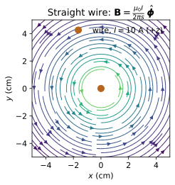
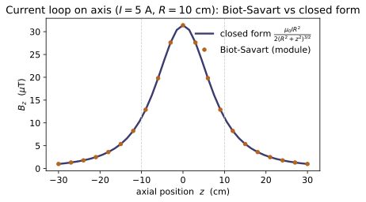
Example problems
A charge $Q$ enters a uniform field $\mathbf B = B\,\hat{\mathbf z}$ with velocity $\mathbf v$. Show $\mathbf F = Q(\mathbf v\times\mathbf B)$ is perpendicular to v, so $dW = \mathbf F\cdot\mathbf v\,dt = 0$ and the speed is constant; the in-plane motion is a circle of radius $r = mv_\perp/QB$ at frequency $\omega = QB/m$. Check: lorentz_force(Q, (v,0,0), (0,0,B)) points along $-\hat{\mathbf y}$ with dot(F, v) == 0 and dot(F, B) == 0 — the magnetic force does no work.
The cross product $\mathbf v\times\mathbf B$ is perpendicular to both factors, so $\mathbf F\cdot\mathbf v = Q(\mathbf v\times\mathbf B)\cdot\mathbf v = 0$ (a vector dotted with a cross product that contains it). Hence the work done is
so $|\mathbf v|$ is constant. For $\mathbf v = v\,\hat{\mathbf x}$ and $\mathbf B = B\,\hat{\mathbf z}$, $\hat{\mathbf x}\times\hat{\mathbf z} = -\hat{\mathbf y}$, giving $\mathbf F = -QvB\,\hat{\mathbf y}$. Numerically $QvB = (1.602\times10^{-19})(10^{6})(0.5) = 8.01\times10^{-14}\,$N, so $\mathbf F = (0,\,-8.01\times10^{-14},\,0)\,$N — exactly what lorentz_force returns, with dot(F, v) and dot(F, B) both zero. With the speed fixed, the magnetic force supplies the centripetal force, $Qv_\perp B = mv_\perp^2/r$, so $r = mv_\perp/QB$ and $\omega = v_\perp/r = QB/m$.
A straight segment carrying $I$ along L sits in a uniform B: show $\mathbf F = I(\mathbf L\times\mathbf B)$. Now let that field be the one set up by a second wire (current $I_2$ a distance $d$ away): using $B = \mu_0 I_2/2\pi d$, show two parallel currents attract with force per length $\mu_0 I_1 I_2/2\pi d$. Check: force_on_wire(I, (0,L,0), (0,0,B)) $= (ILB,0,0)$; then feed infinite_wire_field(I2) evaluated at the second wire into force_on_wire and recover the $\mu_0 I_1 I_2/2\pi d$ per-length force.
Each element feels $d\mathbf F=I\,d\boldsymbol\ell\times\mathbf B$, which for a straight segment $\mathbf L$ in uniform $\mathbf B$ integrates to $\mathbf F=I(\mathbf L\times\mathbf B)$. With $\mathbf L=L\hat{\mathbf y}$, $\mathbf B=B\hat{\mathbf z}$ and $\hat{\mathbf y}\times\hat{\mathbf z}=\hat{\mathbf x}$, this is $\mathbf F=ILB\,\hat{\mathbf x}$. Let $\mathbf B$ now be the field of a parallel wire $I_2$ a distance $d$ off, $B=\mu_0 I_2/2\pi d$; a length $\ell$ of wire $I_1$ then feels
and the right-hand rule points the force on $I_1$ toward $I_2$ — parallel currents attract. Numerically force_on_wire(10, (0,1,0), (0,0,0.5)) $=(5,0,0)$ N $=ILB$; feeding infinite_wire_field(10) at $d=0.05$ m (so $B=4\times10^{-5}$ T) into force_on_wire gives $F/\ell=4\times10^{-4}$ N/m pointing at the other wire — exactly $\mu_0 I_1 I_2/2\pi d$.
Integrate the Biot–Savart law along an infinite straight wire and show $B = \mu_0 I/2\pi s$, directed azimuthally. Check: infinite_wire_field(I) reproduces $\mu_0 I/2\pi s$ for the magnitude; approximate the wire by biot_savart over a long finite segment $[-L, L]$ and confirm it converges to infinite_wire_field at the mid-plane as $L \gg s$.
Put the wire on the $z$-axis and the field point at distance $s$ in the mid-plane. With $d\boldsymbol\ell'=dz'\,\hat{\mathbf z}$ and separation length $\eta=\sqrt{s^2+{z'}^2}$, the cross product $d\boldsymbol\ell'\times\hat{\boldsymbol\eta}$ is azimuthal with magnitude $\sin\theta\,dz'$ where $\sin\theta=s/\eta$:
since $\int_{-\infty}^{\infty}s\,dz'/(s^2+{z'}^2)^{3/2}=2/s$, with the field circling the wire azimuthally. For $I=10$ A, infinite_wire_field gives exactly $\mu_0 I/2\pi s$ ($1.000\times10^{-4}$ T at $s=0.02$ m); approximating the wire by biot_savart over $[-L,L]$ climbs toward it — $9.95\times10^{-5}$, $9.998\times10^{-5}$, $9.99992\times10^{-5}$ T for $L=0.2,1,5$ m — converging once $L\gg s$.
A loop of radius $R$ carries $I$. Show the axial field is $$B_z = \frac{\mu_0 I R^2}{2\,(R^2 + z^2)^{3/2}},$$ purely axial by symmetry, equal to $\mu_0 I/2R$ at the centre and falling as $\mu_0 I R^2/2z^3$ (a dipole) for $z \gg R$ — the leading term ~EM-09 expands. Check: circular_loop_field(I, R) on the axis matches loop_axis_field_closed(I, R, z), with the transverse components vanishing and the centre value $\mu_0 I/2R$.
On the axis every element $I\,d\boldsymbol\ell'$ sits the same distance $\eta=\sqrt{R^2+z^2}$ from the field point with $d\boldsymbol\ell'\perp\boldsymbol\eta$, so $|d\mathbf B|=\tfrac{\mu_0 I}{4\pi}\,d\ell'/(R^2+z^2)$. Symmetry cancels the transverse parts around the loop, leaving only the $z$-projection, weighted by $\cos\alpha=R/\sqrt{R^2+z^2}$:
At the centre $z=0$ this is $\mu_0 I/2R$; for $z\gg R$ it falls as $\mu_0 I R^2/2z^3$ — a magnetic dipole. Numerically circular_loop_field (Biot–Savart) and loop_axis_field_closed agree on the axis — $3.142\times10^{-5}$ T at the centre ($=\mu_0 I/2R$ for $I=5$ A, $R=0.1$ m), $1.111\times10^{-5}$ at $z=0.1$, $9.935\times10^{-7}$ at $z=0.3$ — with the transverse components vanishing.
Use Ampère's law $\oint\mathbf B\cdot d\boldsymbol\ell = \mu_0 I_{\text{enc}}$ on a circle round an infinite wire to get $B\,(2\pi s) = \mu_0 I$ instantly, and argue from $\nabla\cdot\mathbf B = 0$ that B has no sources or sinks. Check: ampere_circulation(infinite_wire_field(I), s) equals $\mu_0 I$ for any radius $s$, and div_B_residual(infinite_wire_field(I), point) $\approx 0$ — no magnetic monopoles.
Symmetry makes $\mathbf B$ azimuthal with constant magnitude on a circle of radius $s$ about the wire, so $\oint\mathbf B\cdot d\boldsymbol\ell=B\oint d\ell=B(2\pi s)$. Ampère's law sets this equal to $\mu_0 I_{\text{enc}}=\mu_0 I$:
the Biot–Savart result in one line, the radius dropping out of the circulation. Its companion $\nabla\cdot\mathbf B=0$ says $\mathbf B$ has no sources or sinks — field lines never start or stop, so there are no magnetic monopoles (the contrast with $\nabla\cdot\mathbf E=\rho/\varepsilon_0$). Numerically ampere_circulation(infinite_wire_field(10), s) returns $\mu_0 I=1.257\times10^{-5}$ for every radius (e.g. $s=0.03$ m), and div_B_residual $\approx9.6\times10^{-8}\approx0$ — no monopoles.
Run the worked code: cd EM/EM-08_magnetostatics/code && python3 magnetostatics.py
EM-09 — Magnetic Vector Potential
Electricity & Magnetism trunk · EM/EM-09_vector_potential · open in the Teaching Network
Magnetostatics (~EM-08) closed with two facts about B: ∇·B = 0 and ∇×B = μ₀J. The first is the subject here. Because B is divergence-free everywhere, it can always be written as the curl of a vector potential, B = ∇×A (Eq. 5.59) — the magnetic mirror of E = −∇V (~EM-03). A is not unique: any A → A + ∇λ leaves B unchanged (the gauge freedom), and the Coulomb gauge ∇·A = 0 spends that freedom to turn Ampère's law into the vector Poisson equation ∇²A = −μ₀J.
A vector potential is returned as a function A(x, y, z) -> (Ax, Ay, Az) — the same MA-02 vector-field convention ~EM-08 uses for B — so MA-02's curl takes B = ∇×A and divergence tests the gauge with no glue code. The headline object is the magnetic dipole A = (μ₀/4π) m×r̂/r² (Eq. 5.85) of a current loop with moment m = Ia (Eq. 5.86), whose curl reproduces both the closed-form dipole field and — for a straight wire — EM-08's B = μ₀I/2πs. SI units throughout.
Key equations
Figures
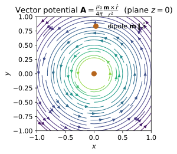
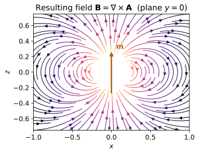
Example problems
A straight wire on the $z$-axis carries steady current $I$. Its vector potential can be taken parallel to the current, $$\mathbf A=-\frac{\mu_0 I}{2\pi}\ln\!\frac{s}{s_0}\,\hat{\mathbf z},\qquad s=\sqrt{x^2+y^2}.$$ Show that $\nabla\times\mathbf A=\dfrac{\mu_0 I}{2\pi s}\,\hat{\boldsymbol\varphi}$, the EM-08 wire field, and that changing the reference radius $s_0$ only adds a constant to $\mathbf A$ — a gauge transformation $\mathbf A\to\mathbf A+\nabla\lambda$ with $\lambda$ linear in $z$ — leaving $\mathbf B$ untouched. Check: wire_vector_potential(I) then B_from_A reproduces infinite_wire_field (~EM-08); re-run with a different s0 and confirm B_from_A is unchanged.
For $\mathbf A=A_z(s)\hat{\mathbf z}$ the only surviving curl component is azimuthal, $\nabla\times\mathbf A=-\partial_s A_z\,\hat{\boldsymbol\varphi}$. With $A_z=-\frac{\mu_0 I}{2\pi}\ln(s/s_0)$,
the EM-08 wire field. Replacing $s_0\to s_0'$ shifts $A_z$ by the constant $\frac{\mu_0 I}{2\pi}\ln(s_0'/s_0)$, i.e. $\mathbf A\to\mathbf A+\nabla\lambda$ with $\lambda=\big[\tfrac{\mu_0 I}{2\pi}\ln(s_0'/s_0)\big]z$ linear in $z$; since $\nabla\times\nabla\lambda=0$, $\mathbf B$ is untouched. At $(0.05,0,0)$ with $I=10$ A, B_from_A(wire_vector_potential(I)) returns $(0,\,4.0\times10^{-5},\,0)$ T, matching infinite_wire_field for every s0.
A planar loop carrying current $I$ has magnetic moment $\mathbf m=I\int d\mathbf a =I\,\mathbf a$ (Eq. 5.86), where $\mathbf a$ is the oriented area it bounds. Compute $\mathbf m$ for (a) a circle of radius $R$ and (b) a square of side $L$, both in the $xy$-plane, and confirm $\mathbf m$ depends only on the enclosed area, not the shape. Check: magnetic_dipole_moment(I, (0,0,math.pi*R2)) for the circle versus magnetic_dipole_moment(I, (0,0,L2)) for the square give the same $\hat{\mathbf z}$-moment when $\pi R^2=L^2$.
Since $\mathbf m=I\int d\mathbf a=I\mathbf a$ is current times the oriented area, only the enclosed area enters — the boundary shape is irrelevant. (a) Circle: $\mathbf a=\pi R^2\hat{\mathbf z}$, so $\mathbf m=I\pi R^2\hat{\mathbf z}$. (b) Square: $\mathbf a=L^2\hat{\mathbf z}$, so $\mathbf m=IL^2\hat{\mathbf z}$. Imposing $\pi R^2=L^2$ makes the two areas equal, hence $\mathbf m$ identical. For $I=3$ A, $R=0.02$ m (so $L=\sqrt\pi\,R$), both magnetic_dipole_moment calls return $m_z=3.770\times10^{-3}$ A·m² — equal to machine precision, confirming the moment depends on area alone.
For $\mathbf m=m\,\hat{\mathbf z}$, write the dipole vector potential $$\mathbf A_{\text{dip}}=\frac{\mu_0}{4\pi}\frac{\mathbf m\times\hat{\mathbf r}}{r^{2}} =\frac{\mu_0}{4\pi}\frac{m\sin\theta}{r^{2}}\,\hat{\boldsymbol\varphi},$$ purely azimuthal, and show $|\mathbf A|\propto 1/r^{2}$ along any fixed direction. Check: dipole_vector_potential(m); evaluate the magnitude at $(r,0,0)$ and $(2r,0,0)$ and confirm the ratio is $2^2=4$.
For $\mathbf m=m\hat{\mathbf z}$ use $\hat{\mathbf z}\times\hat{\mathbf r}=\sin\theta\,\hat{\boldsymbol\varphi}$:
purely azimuthal. Along a fixed direction $\theta=\text{const}$ the magnitude $|\mathbf A|=\frac{\mu_0}{4\pi}\frac{m\sin\theta}{r^2}\propto r^{-2}$, so doubling $r$ divides $|\mathbf A|$ by $2^2=4$. On the equatorial line $(r,0,0)$, $\theta=\pi/2$ and $\sin\theta=1$. With $m=1$, dipole_vector_potential gives $|\mathbf A|=1.0\times10^{-5}$ at $(0.1,0,0)$ and $2.5\times10^{-6}$ at $(0.2,0,0)$, ratio exactly $4.0$.
Take the curl of $\mathbf A_{\text{dip}}$ and obtain the magnetic dipole field $$\mathbf B_{\text{dip}}=\frac{\mu_0}{4\pi}\frac{1}{r^{3}} \big[\,3(\mathbf m\cdot\hat{\mathbf r})\hat{\mathbf r}-\mathbf m\,\big].$$ Show the on-axis field ($\theta=0$) is $2(\mu_0/4\pi)m/r^{3}$ and the equatorial field ($\theta=\pi/2$) is $-(\mu_0/4\pi)m/r^{3}$ — twice as large and opposite, the same $2{:}1$ ratio as the electric dipole (~EM-05, Eq. 3.104) under $(1/4\pi\varepsilon_0,\mathbf p)\to(\mu_0/4\pi,\mathbf m)$. Check: B_from_A(dipole_vector_potential(m)) matches dipole_B_field_closed(m) pointwise; verify the axis value $\mathbf B(0,0,d)$ and the bisector value $\mathbf B(d,0,0)$.
On axis ($\theta=0$) $\hat{\mathbf r}=\hat{\mathbf z}$ and $\mathbf m\cdot\hat{\mathbf r}=m$, so
On the equator ($\theta=\pi/2$) $\mathbf m\cdot\hat{\mathbf r}=0$, leaving $\mathbf B=-\frac{\mu_0 m}{4\pi r^3}\hat{\mathbf z}$ — half as large and antiparallel, the same $2{:}1$ ratio the electric dipole shows under $(1/4\pi\varepsilon_0,\mathbf p)\to(\mu_0/4\pi,\mathbf m)$. With $m=1$, $d=0.1$, dipole_B_field_closed gives $\mathbf B(0,0,d)=(0,0,2.0\times10^{-4})$ and $\mathbf B(d,0,0)=(0,0,-1.0\times10^{-4})$, reproduced pointwise by B_from_A(dipole_vector_potential(m)).
Verify directly that the dipole potential already satisfies the Coulomb gauge, $\nabla\cdot\mathbf A_{\text{dip}}=0$, so no further fixing is needed. Then argue that a gauge shift $\mathbf A\to\mathbf A+\nabla\lambda$ preserves $\mathbf B$ for any $\lambda$, but preserves the Coulomb gauge only when $\lambda$ is harmonic, $\nabla^2\lambda=0$ (e.g. $\lambda\propto z$). Check: coulomb_gauge_residual(dipole_vector_potential(m), point) returns a normalized value $\approx 0$ at several off-axis points.
Write $\mathbf A_{\text{dip}}=\frac{\mu_0}{4\pi}\frac{\mathbf m\times\mathbf r}{r^3}$ and apply $\nabla\cdot(f\mathbf F)=f\,\nabla\cdot\mathbf F+\mathbf F\cdot\nabla f$ with $f=r^{-3}$, $\mathbf F=\mathbf m\times\mathbf r$. The first term vanishes because $\nabla\cdot(\mathbf m\times\mathbf r)=\mathbf r\cdot(\nabla\times\mathbf m)-\mathbf m\cdot(\nabla\times\mathbf r)=0$ (both curls are zero); the second vanishes because $(\mathbf m\times\mathbf r)\cdot\nabla r^{-3}=-3r^{-5}(\mathbf m\times\mathbf r)\cdot\mathbf r=0$ (the cross product is $\perp\mathbf r$). Hence $\nabla\cdot\mathbf A_{\text{dip}}=0$ identically — the Coulomb gauge already holds. A shift $\mathbf A\to\mathbf A+\nabla\lambda$ leaves $\mathbf B=\nabla\times\mathbf A$ unchanged for any $\lambda$, but preserves $\nabla\cdot\mathbf A=0$ only when $\nabla^2\lambda=0$ — harmonic $\lambda$, e.g. $\lambda\propto z$. Accordingly coulomb_gauge_residual returns $\sim10^{-8}$ at the off-axis points $(0.1,0.05,0.08)$ etc., numerically zero.
Run the worked code: cd EM/EM-09_vector_potential/code && python3 vector_potential.py
EM-10 — Magnetic Materials & Magnetization
Electricity & Magnetism trunk · EM/EM-10_magnetic_materials · open in the Teaching Network
The magnetic analogue of dielectrics (~EM-07). A magnetized object — described by its magnetization M, the magnetic dipole moment per unit volume — carries bound currents: a volume current J_b = ∇×M (Eq. 6.13, via the MA-02 curl) and a surface current K_b = M×n̂ (Eq. 6.14, via the MA-01 cross). These are the magnetic mirror of ~EM-07's bound charge. A uniformly magnetized cylinder, M = M ẑ, has no interior current (∇×M = 0) but a side current K_b = M φ̂ — it is a solenoid.
Folding the bound current into Ampère's law isolates the free current behind an auxiliary field H = B/μ₀ − M (Eq. 6.18), whose circulation reads the free current alone: ∮H·dl = I_free,enc (Eq. 6.20). For linear media M is proportional to H, M = χ_mH (Eq. 6.29), so B = μH with μ = μ₀(1+χ_m) (Eqs. 6.31, 6.33) — the magnetic permeability. Ferromagnets are not linear: M depends on the history of H, tracing a hysteresis loop with remanence and coercivity. Like ~EM-01/~EM-08, M, B, H are returned as field functions (x,y,z) -> (·,·,·), so MA-02 operators act on them directly. SI units throughout (M, H in A/m; B in T; χ_m, μ_r dimensionless).
Key equations
Figures
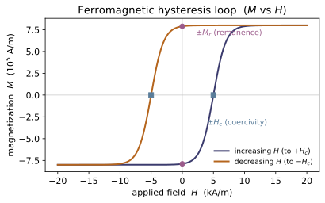
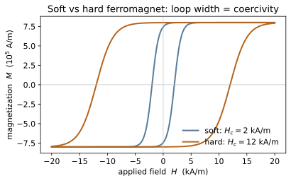
Example problems
A long cylinder of radius $R$ is uniformly magnetized along its axis, $\mathbf M = M\,\hat{\mathbf z}$. Show the interior bound volume current vanishes, $\mathbf J_b=\nabla\times\mathbf M=\mathbf 0$, while the side wall carries a bound surface current $\mathbf K_b=\mathbf M\times\hat{\mathbf n}=M\,\hat{\boldsymbol\phi}$. Conclude the cylinder is equivalent to a solenoid with $nI=M$, so the field inside is $\mathbf B=\mu_0 M\,\hat{\mathbf z}$ (long-solenoid limit). Check: bound_volume_current(lambda x,y,z:(0,0,M), (0.1,0.2,0)) is $(0,0,0)$, and bound_surface_current((0,0,M),(1,0,0)) returns $(0,M,0)=M\hat{\boldsymbol\phi}$ with norm $=M$.
Use the bound currents (Eqs. 6.13–6.14) $\mathbf J_b=\nabla\times\mathbf M$ and $\mathbf K_b=\mathbf M\times\hat{\mathbf n}$. For $\mathbf M=M\,\hat{\mathbf z}$ uniform, every derivative of $\mathbf M$ is zero, so $\mathbf J_b=\nabla\times(M\,\hat{\mathbf z})=\mathbf 0$ — no interior current. On the side wall the outward normal is radial, $\hat{\mathbf n}=\hat{\mathbf s}$, and with $\hat{\mathbf z}\times\hat{\mathbf s}=\hat{\boldsymbol\phi}$,
This is precisely a solenoid's wall current with $nI=M$, so the long-solenoid result gives $\mathbf B=\mu_0 nI\,\hat{\mathbf z}=\mu_0 M\,\hat{\mathbf z}$ inside. Numerically the curl returns $(0,0,0)$ and bound_surface_current((0,0,M),(1,0,0)) $=(0,M,0)$ with norm $=M$.
Now let the magnetization swirl, $\mathbf M=(-a\,y,\;a\,x,\;0)$ with constant $a$. Compute the bound volume current $\mathbf J_b=\nabla\times\mathbf M$ and show it is the uniform axial current $\mathbf J_b=2a\,\hat{\mathbf z}$. Contrast with P1: a non-uniform M does feed a real volume current, whereas a uniform M does not. Check: bound_volume_current(lambda x,y,z:(-ay, ax, 0), (0.3,0.1,0)) $\approx (0,0,2a)$.
For $\mathbf M=(-a\,y,\;a\,x,\;0)$ the bound volume current (Eq. 6.13) is the curl
The first two components vanish ($M_z=0$ and $M_x,M_y$ have no $z$-dependence); the third is $\partial_x(a x)-\partial_y(-a y)=a-(-a)=2a$, so
A non-uniform $\mathbf M$ thus carries a uniform axial volume current, unlike the uniform $\mathbf M$ of P1. For $a=5$, bound_volume_current(...) returns $(0,0,10)=2a\,\hat{\mathbf z}$.
A long solenoid ($n$ turns per length, free current $I_f$) is filled with a linear medium of susceptibility $\chi_m$. Apply $\oint\mathbf H\cdot d\boldsymbol\ell=I_{f,\text{enc}}$ to get $\mathbf H = nI_f\,\hat{\mathbf z}$ independent of the medium; then $\mathbf B=\mu\mathbf H=\mu_0(1+\chi_m)nI_f\,\hat{\mathbf z}$ and $\mathbf M=\chi_m\mathbf H$. Verify the definition $\mathbf H=\mathbf B/\mu_0-\mathbf M$ reproduces the same H. Check: with $H(x,y,z)=(0,0,nI_f)$, B_linear(chi_m, H) and magnetization_linear(chi_m, H) and permeability(chi_m) give B, M, μ; feeding B, M back through auxiliary_field_H returns the original H.
Apply Ampère's law for $\mathbf H$ (Eq. 6.20), $\oint\mathbf H\cdot d\boldsymbol\ell=I_{f,\text{enc}}$, to a rectangular loop with one side of length $\ell$ running along the axis inside the solenoid. Only free current is enclosed — the $n\ell I_f$ turns it threads — and $\mathbf H$ is axial and uniform inside, zero outside, so $H\ell=n\ell I_f$ gives
Then $\mathbf B=\mu\mathbf H=\mu_0(1+\chi_m)nI_f\,\hat{\mathbf z}$ (Eq. 6.31) and $\mathbf M=\chi_m\mathbf H=\chi_m nI_f\,\hat{\mathbf z}$ (Eq. 6.29). Substituting back into the definition,
recovering the original field — exactly what feeding B_linear and magnetization_linear through auxiliary_field_H returns.
A sphere is uniformly magnetized, $\mathbf M=M\,\hat{\mathbf z}$. Its interior fields are uniform: $\mathbf B_{\text{in}}=\tfrac{2}{3}\mu_0\mathbf M$ and $\mathbf H_{\text{in}}=-\mathbf M/3$. Verify the defining relation $\mathbf B=\mu_0(\mathbf H+\mathbf M)$ holds inside, and explain why $\mathbf H_{\text{in}}$ points against M (the demagnetizing field); the exterior field is a pure dipole. Check: magnetized_sphere_inner_B((0,0,M)) $=(0,0,\tfrac{2}{3}\mu_0 M)$, magnetized_sphere_inner_H((0,0,M)) $=(0,0,-M/3)$, and $B_{\text{in}}=\mu_0(H_{\text{in}}+M)$ to machine precision.
Inside the uniformly magnetized sphere the fields are uniform (Eq. 6.16), $\mathbf B_{\text{in}}=\tfrac{2}{3}\mu_0\mathbf M$. The auxiliary field follows from its definition (Eq. 6.18):
Check the constitutive relation: $\mu_0(\mathbf H_{\text{in}}+\mathbf M)=\mu_0\!\left(-\tfrac13\mathbf M+\mathbf M\right)=\tfrac23\mu_0\mathbf M=\mathbf B_{\text{in}}$. ✓ Because $\mathbf H_{\text{in}}=-\mathbf M/3$ points against $\mathbf M$ it is a demagnetizing field — sourced by the effective magnetic charge $-\nabla\cdot\mathbf M$ on the poles. For $\mathbf M=8\times10^5\,\hat{\mathbf z}$ A/m the code returns $\mathbf B_{\text{in}}=0.6702\,\hat{\mathbf z}$ T and $\mathbf H_{\text{in}}=-2.667\times10^5\,\hat{\mathbf z}$ A/m, matching magnetized_sphere_inner_B and magnetized_sphere_inner_H.
(a) For $\chi_m=-1.7\times10^{-5}$ (water), $2.5\times10^{-4}$ (paramagnetic metal), and $5500$ (soft iron), name each class and compute $\mu/\mu_0=1+\chi_m$. (b) For a ferromagnet with saturation $M_s$, coercive scale $H_c$, and loop width $w$, model the two branches and identify the remanence $M_r=|M_\downarrow(0)|>0$ (a permanent magnet) and the coercivity $H_c$ where $M_\downarrow(-H_c)=0$. Explain why an open loop ($M_\downarrow(0)\neq M_\uparrow(0)$) means M depends on history. Check: classify_material and permeability for (a); hysteresis_branches, remanence, coercivity for (b) — confirm the descending branch is positive at $H=0$ and crosses zero at $H=-H_c$.
(a) The relative permeability is $\mu/\mu_0=1+\chi_m$ (Eq. 6.33). Reading the sign and size of $\chi_m$: water $\chi_m=-1.7\times10^{-5}<0$ → diamagnetic, $\mu/\mu_0=0.999983$; the metal $\chi_m=2.5\times10^{-4}$ (small, positive) → paramagnetic, $\mu/\mu_0=1.00025$; soft iron $\chi_m=5500$ (large) → ferromagnetic, $\mu/\mu_0=5501$. (b) The descending branch is $M_\downarrow(H)=M_s\tanh\!\big((H+H_c)/w\big)$. At $H=0$,
the remanent (permanent) magnetization, while $M_\downarrow(-H_c)=M_s\tanh 0=0$ fixes the coercivity $H_c=5\times10^3$ A/m. Since $M_\downarrow(0)>0>M_\uparrow(0)$ the loop is open — $\mathbf M$ at $H=0$ depends on whether the field was swept down or up, i.e. on history. These match remanence ($7.893\times10^5$), coercivity ($5\times10^3$), classify_material and permeability.
Run the worked code: cd EM/EM-10_magnetic_materials/code && python3 magnetic_materials.py
EM-11 — Electromagnetic Induction
Electricity & Magnetism trunk · EM/EM-11_induction · open in the Teaching Network
The first time-dependent chapter of the subject. A changing magnetic flux drives an EMF — Faraday's law — and the induced current always flows so as to oppose the change that produced it (Lenz's law, the minus sign). The flux can change two ways: because B itself varies in time (a genuine induced electric field, ∇×E = −∂B/∂t) or because the circuit moves through B (motional EMF, the Lorentz force on the carriers). The flux itself, Φ = ∫B·da, is just the ~MA-02 surface_flux of the ~EM-08 field, reused without change.
Flux linkage proportional to current defines inductance, Φ = L I, and a current-carrying coil stores energy that reads two ways — ½LI² in the circuit or (1/2μ₀)∫B² dτ spread through the field — which agree exactly, echoing the charge-vs-field energy duality of ~EM-06. SI units throughout; a field is a function B(x, y, z) -> (Bx, By, Bz) (the MA-02 convention), so surface_flux acts on it with no glue code.
Key equations
Figures
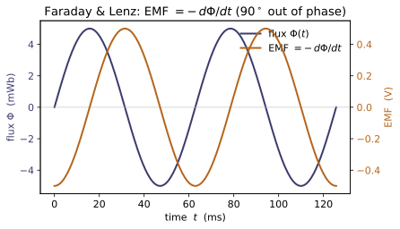
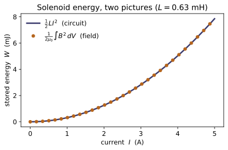
Example problems
A flat loop of area $A$ lies in a spatially uniform field $\mathbf B(t)=B_0\sin(\omega t)\,\hat{\mathbf z}$ normal to it. Show the flux is $\Phi(t)=B_0A\sin\omega t$ and hence $$\mathcal{E}=-\frac{d\Phi}{dt}=-B_0A\omega\cos\omega t,$$ so the peak EMF is $B_0A\omega$ and the induced current opposes the field while the flux is rising (Lenz). Check: build B and flat_loop_surface, confirm magnetic_flux gives $B_0A$ at the instant $\sin\omega t=1$, and that faraday_emf(flux, t) matches $-B_0A\omega\cos\omega t$; lenz_sign(dΦ/dt) flips with the sign of $\cos\omega t$.
With $\mathbf B$ uniform and normal to the loop, $d\mathbf a=da\,\hat{\mathbf z}$, so
Faraday's law then gives $\mathcal{E}=-\dfrac{d\Phi}{dt}=-B_0A\omega\cos\omega t$, peaking at $|\mathcal{E}|=B_0A\omega$ when $\cos\omega t=\pm1$. While the flux rises ($\dot\Phi=B_0A\omega\cos\omega t>0$) Lenz's law forces the induced current to oppose it, so $\mathcal{E}<0$. Numerically, at $\sin\omega t=1$ the flux equals $B_0A=0.5\times0.01=5\times10^{-3}$ (matching magnetic_flux), and at $t=0$ faraday_emf returns $-0.5\,$V $=-B_0A\omega$; lenz_sign returns $-1$ for $\dot\Phi>0$ and $+1$ for $\dot\Phi<0$, flipping with $\cos\omega t$.
A rod of length $L$ slides at speed $v$ along two rails in a uniform field $B$ perpendicular to the plane of the circuit. From the Lorentz force $q\,\mathbf v\times\mathbf B$ show the motional EMF is $\mathcal{E}=BvL$, and that this equals $-d\Phi/dt$ computed from the area the rod sweeps (the flux rule, p.313). Which way does the induced current flow? Check: motional_emf(B, v, L) for $B=0.3$ T, $v=2$ m/s, $L=0.5$ m returns $0.3$ V.
Each charge in the rod feels $\mathbf f=q\,\mathbf v\times\mathbf B$; with $\mathbf v$, $\mathbf B$ and the rod mutually perpendicular, $|\mathbf v\times\mathbf B|=vB$ points along the rod. The EMF is the work per unit charge around the loop,
Equivalently, in time $dt$ the rod sweeps area $dA=Lv\,dt$, so $d\Phi=B\,dA=BLv\,dt$ and $|{-}d\Phi/dt|=BvL$ — the flux rule gives the identical answer. By Lenz the induced current circulates so its own flux opposes the growing $\Phi$ (counter-clockwise if $\mathbf B$ points out of the page and the area is increasing). Numerically $\mathcal{E}=0.3\times2\times0.5=0.3\,$V, as motional_emf(0.3, 2.0, 0.5) returns.
A long solenoid has $N$ turns over length $l$ and cross-section $A$. Using $B=\mu_0(N/l)I$ inside and $\Phi=LI$ for the total flux linkage of all $N$ turns, derive $$L=\frac{\mu_0 N^2 A}{l}.$$ Evaluate it for $N=1000$, $A=10^{-4}\,\mathrm{m^2}$, $l=0.2$ m. Check: solenoid_inductance(1000, 1e-4, 0.2) $\approx 6.28\times10^{-4}$ H.
Inside the solenoid the field is uniform, $B=\mu_0(N/l)I$, so the flux through one turn is $BA=\mu_0(N/l)IA$. The total flux linkage threads all $N$ turns,
Comparing with $\Phi=LI$ identifies $L=\mu_0 N^2 A/l$. Inserting the numbers,
exactly what solenoid_inductance(1000, 1e-4, 0.2) returns ($6.2832\times10^{-4}$ H).
For the solenoid of P3 carrying current $I=3$ A, compute the stored energy both as $$W=\tfrac12 L I^2 \qquad\text{and}\qquad W=\frac{1}{2\mu_0}\int B^2\,d\tau$$ over the interior ($B=\mu_0NI/l$ uniform inside, $\approx 0$ outside), and show the two agree. Check: energy_in_inductor(L, 3.0) equals magnetic_field_energy_solenoid(1000, 1e-4, 0.2, 3.0) $\approx 2.83\times10^{-3}$ J — the same charge-vs-field duality as ~EM-06.
The inductor picture gives $W=\tfrac12 LI^2=\tfrac12(6.28\times10^{-4})(3)^2=2.83\times10^{-3}\,$J. The field picture integrates $u=B^2/2\mu_0$ over the interior volume $V=Al$, where $B=\mu_0NI/l$ is uniform:
so the two are algebraically identical — the substitution turns the field integral straight back into $\tfrac12 LI^2$. Numerically both equal $2.8274\times10^{-3}\,$J, confirming energy_in_inductor(L, 3.0) $=$ magnetic_field_energy_solenoid(1000, 1e-4, 0.2, 3.0), the magnetic twin of the ~EM-06 charge-vs-field duality.
Two coaxial solenoids share the cross-section $A$ and length $l$, with $N_1$ and $N_2$ turns. A current $I_1(t)$ in coil 1 induces $\mathcal{E}_2=-M\,dI_1/dt$ in coil 2. Show $M=\mu_0 N_1 N_2 A/l$ and argue the reciprocity $M_{12}=M_{21}$ — the mutual inductance is independent of which coil drives. Check: mutual_inductance_solenoids(N1, N2, A, l) returns the same value as the call with $N_1$ and $N_2$ swapped.
Current $I_1$ in coil 1 makes the uniform interior field $B_1=\mu_0(N_1/l)I_1$, which threads every one of coil 2's $N_2$ turns. The flux linkage of coil 2 is therefore
and $\mathcal{E}_2=-M\,dI_1/dt$ follows from Faraday's law. The expression is symmetric under $N_1\leftrightarrow N_2$, so driving coil 2 instead gives the identical $M$: this is reciprocity $M_{12}=M_{21}$ (a general theorem, here made explicit). Hence mutual_inductance_solenoids(N1, N2, A, l) equals the same call with $N_1,N_2$ swapped (e.g. both give $3.770\times10^{-3}$ H for $N_1{=}2000,N_2{=}3000$).
Run the worked code: cd EM/EM-11_induction/code && python3 induction.py
EM-12 — AC Circuits & Driven RLC
Electricity & Magnetism trunk · EM/EM-12_ac_circuits · open in the Teaching Network
Take the induction physics of ~EM-11 — a resistor, an inductor (EMF = −L dI/dt) and a capacitor — and drive the loop sinusoidally at angular frequency ω. Writing the drive as the real part of a phasor V₀e^{iωt} and seeking a current ∝ e^{iωt} turns every element into a complex impedance obeying a phasor Ohm's law V = IZ: Z_R = R, Z_L = iωL, Z_C = 1/(iωC). For a series RLC the impedances add, Z = R + i(ωL − 1/ωC); the reactance cancels at the resonant frequency ω₀ = 1/√(LC), where Z = R is purely resistive, the current peaks at V₀/R and runs in phase with the drive. How sharp that peak is — the quality factor — is Q = ω₀L/R = (1/R)√(L/C).
Everything here is the electrical twin of the ~CM-15 driven oscillator: the loop equation L q'' + R q' + q/C = V₀ cos ωt is, term for term, the driven damped oscillator m x'' + b x' + k x = F₀ cos ωt (KEY BRIDGE B6). The steady-state solver is the ~MA-05/~MA-06 complex exponential. AC circuit theory is not a numbered Griffiths section — he develops it in the Ch. 7 problems on top of §7.1–7.2 (EMF and inductance) — so refs.md gives the honest citation picture.
Key equations
Figures
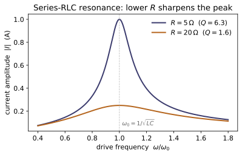
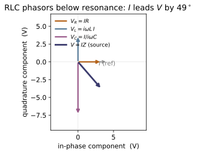
Example problems
For $R$, $L$, $C$ in series driven at $\omega$, show the impedance is $$Z=R+i\!\left(\omega L-\frac{1}{\omega C}\right),$$ and that the reactance cancels — so $Z$ is purely resistive and minimal, $\lvert Z\rvert=R$ — exactly at $\omega_0=1/\sqrt{LC}$. Check: series_rlc_impedance(R, L, C, resonant_frequency(L, C)) returns a complex with zero imaginary part and real part $R$; off resonance the imaginary part is nonzero.
In series the same current flows through every element, so the impedances add: $Z=Z_R+Z_L+Z_C=R+i\omega L+\frac{1}{i\omega C}$. Using $\frac{1}{i\omega C}=-\frac{i}{\omega C}$,
The reactance $X$ vanishes when $\omega L=1/\omega C$, i.e. $\omega^2=1/LC$, giving $\omega_0=1/\sqrt{LC}$. There $Z=R$ is purely real, and since $\lvert Z\rvert=\sqrt{R^2+X^2}\ge R$ with equality only at $X=0$, the magnitude is minimal, $\lvert Z\rvert=R$. So series_rlc_impedance(R, L, C, resonant_frequency(L, C)) returns $R+0i$ (here $10+0i\,\Omega$), while off resonance the imaginary part is nonzero.
With drive amplitude $V_0$, show the steady-state current amplitude $\lvert I\rvert=V_0/\lvert Z\rvert$ peaks at resonance with $\lvert I\rvert=V_0/R$, and is smaller at every other frequency. Sketch $\lvert I\rvert(\omega)$ — the Lorentzian resonance peak shared with the ~CM-15 oscillator. Check: current_amplitude(V0, series_rlc_impedance(...)) evaluated at resonant_frequency(L, C) equals V0/R, and exceeds its values at $0.7\,\omega_0$ and $1.3\,\omega_0$.
Phasor Ohm's law gives $\lvert I\rvert=V_0/\lvert Z\rvert$ with $\lvert Z\rvert=\sqrt{R^2+X^2}$, $X=\omega L-1/\omega C$. The denominator is smallest when the reactance vanishes ($X=0$ at $\omega_0$), so the current is largest there:
Any nonzero $X$ only adds to the denominator, so $\lvert I\rvert$ falls off on both sides — the Lorentzian resonance peak shared with the ~CM-15 oscillator, of height $V_0/R$ and width set by $R$. With $R=10,\,V_0=5$ the peak is $\lvert I\rvert=V_0/R=0.5$ A; at $0.7\,\omega_0$ and $1.3\,\omega_0$ the current has dropped to $0.199$ A and $0.256$ A — both below the peak, so current_amplitude is maximal exactly at resonant_frequency(L, C).
Show the current phase relative to the drive is $\phi=-\arg Z$: the current leads ($\phi>0$, capacitive) below $\omega_0$, lags ($\phi<0$, inductive) above, and is zero at resonance. Explain the signs from the reactance $X=\omega L-1/\omega C$. Check: current_phase(series_rlc_impedance(...)) is $>0$ at $0.5\,\omega_0$, $\approx 0$ at $\omega_0$, and $<0$ at $2\,\omega_0$.
The phasor current $I_0=V_0/Z$ carries the phase $\phi=-\arg Z=-\arctan(X/R)$ with reactance $X=\omega L-1/\omega C$:
Below $\omega_0$ the capacitor dominates ($1/\omega C>\omega L$, so $X<0$): $\phi>0$, the current leads the drive — capacitive. Above $\omega_0$ the inductor dominates ($X>0$): $\phi<0$, the current lags — inductive. At $\omega_0$ the reactances cancel ($X=0$) and $\phi=0$, current in phase. So current_phase returns $+78.1^\circ$ at $0.5\,\omega_0$ (leading), $\approx0$ at $\omega_0$, and $-78.1^\circ$ at $2\,\omega_0$ (lagging) — equal magnitudes because $X(r\omega_0) =-X(\omega_0/r)$ is antisymmetric about $\omega_0$ on a log-frequency axis.
Derive the two equal forms of the quality factor, $$Q=\frac{\omega_0 L}{R}=\frac{1}{R}\sqrt{\frac{L}{C}}\qquad(\text{use }\omega_0 L=\sqrt{L/C}),$$ and the half-power bandwidth $\Delta\omega=\omega_0/Q=R/L$. Confirm the mechanical correspondence $Q\leftrightarrow\omega_0 m/b$. Check: quality_factor(R, L, C) equals both w0L/R and (1/R)sqrt(L/C), and bandwidth(R, L) equals w0/quality_factor(R, L, C).
At resonance the inductive reactance is $\omega_0 L=L/\sqrt{LC}=\sqrt{L/C}$, so the quality factor — the reactance-to-resistance ratio at $\omega_0$ — has two equal forms:
The half-power width is $\Delta\omega=R/L$; dividing by $\omega_0=1/\sqrt{LC}$,
so $\Delta\omega=\omega_0/Q$ — small $R$ gives large $Q$ and a narrow, sharply selective peak. Under the ~CM-15 dictionary $L\to m,\;R\to b$ this is $Q=\omega_0 m/b$, the mechanical quality factor. With $R=10,\,L=10^{-3},\,C=10^{-6}$: $Q=3.162$ and $\Delta\omega=R/L=10^4$ rad/s, equal to $\omega_0/Q$ — exactly what quality_factor(R, L, C) and bandwidth(R, L) return.
Show that only the resistor dissipates, so $$\langle P\rangle=\tfrac12\lvert I\rvert^2R=\tfrac12V_0^2\,\frac{\mathrm{Re}\,Z}{\lvert Z\rvert^2},$$ peaking at $V_0^2/2R$ on resonance. Show the power falls to half its peak where $\lvert X\rvert=R$, i.e. at $\omega_0\pm\Delta\omega/2$ — the width that defines $Q$. Check: average_power(V0, series_rlc_impedance(...)) equals V0**2/(2*R) at $\omega_0$, is smaller off resonance, and is $\approx$ half-peak at $\omega_0+\,$bandwidth(R, L)$/2$.
Inductor and capacitor are lossless (their current runs $90^\circ$ out of phase with their voltage), so only $R$ dissipates: with $\lvert I\rvert=V_0/\lvert Z\rvert$,
since $\lvert Z\rvert^2=R^2+X^2$ is minimal ($=R^2$) at resonance. The power halves when $\lvert Z\rvert^2=2R^2$, i.e. $X^2=R^2$, i.e. $\lvert X\rvert=\lvert\omega L-1/\omega C\rvert=R$. The two roots of $\omega L-1/\omega C=\pm R$ are separated by exactly $\Delta\omega=R/L$, the bandwidth that defines $Q$, and lie at $\omega_0\pm\Delta\omega/2$ to leading order in $1/Q$. With $R=10,\,V_0=5$ the peak is $V_0^2/2R=1.25$ W, and at $\omega_0+\Delta\omega/2$ average_power returns $\approx0.67$ W against the half-peak $0.625$ W — the small excess being the finite-$Q$ asymmetry of the exact half-power roots about $\omega_0$.
Run the worked code: cd EM/EM-12_ac_circuits/code && python3 ac_circuits.py
EM-13 — Maxwell's Equations
Electricity & Magnetism trunk · EM/EM-13_maxwell_equations · open in the Teaching Network
The keystone of the subject: the four Maxwell's equations, and the one term — Maxwell's displacement current $\mathbf J_d = \varepsilon_0\,\partial\mathbf E/\partial t$ (Eq. 7.38) — that Maxwell added to Ampère's law to make the set consistent and dynamical. With it the four laws read ∇·E = ρ/ε₀, ∇·B = 0, ∇×E = −∂B/∂t, and ∇×B = μ₀J + μ₀ε₀ ∂E/∂t (Eq. 7.39–7.42).
Each equation is a statement about a divergence or a curl of E or B, so each maps onto exactly one MA-02 operator and is checked directly on field functions — no glue code. The fields here are 4-argument functions F(x, y, z, t); each residual function freezes the time slice and hands the spatial field to MA-02's divergence/curl. The headline, verify_vacuum_plane_wave, feeds a vacuum plane wave through those operators and confirms all four normalized residuals vanish — which happens only when ω = ck, forcing the wave speed $c = 1/\sqrt{\mu_0\varepsilon_0}$: light is what electrostatics + magnetostatics + the displacement current predict.
The verification runs in natural units (the wave speed c is a free parameter, taken = 1) so the central-difference time derivative partial_t stays well conditioned; with the SI value $c\approx3\times10^8$ the field would oscillate far faster than the finite step dt. The genuine SI number is reported separately as C_SI = 1/√(μ₀ε₀) ≈ 2.998×10⁸ m/s. The residuals are dimensionless (normalized by the local derivative scale), so "satisfied" means ≈ 0 in any units.
Key equations
Figures
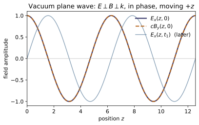
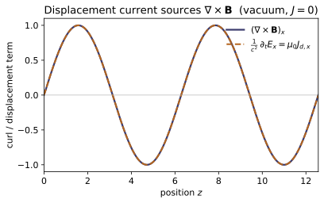
Example problems
A parallel-plate capacitor charges so that the uniform field between the plates grows at $\partial E/\partial t$ (no medium, $\hat{\mathbf x}$ across the gap). There is no conduction current between the plates, yet Ampère–Maxwell still gives a circulating B. Show it is supplied entirely by the displacement current $$\mathbf J_d=\varepsilon_0\,\frac{\partial\mathbf E}{\partial t},$$ and evaluate $|\mathbf J_d|$ for $\partial E/\partial t = 10^{12}\ \mathrm{V/m/s}$. Check: displacement_current_density((1e12, 0, 0)) returns $\varepsilon_0\cdot10^{12}\approx 8.85\ \mathrm{A/m^2}$ for the $x$-component.
Between the plates the conduction current is zero, so Ampère–Maxwell keeps only the displacement term: $\nabla\times\mathbf B=\mu_0\varepsilon_0\,\partial\mathbf E/\partial t=\mu_0\mathbf J_d$ with $\mathbf J_d=\varepsilon_0\,\partial\mathbf E/\partial t$ — the changing field is the sole source of the circulating B. Its magnitude follows directly:
So displacement_current_density((1e12,0,0)) returns $(8.854,0,0)$ — the $x$-component $\varepsilon_0\cdot10^{12}=8.854\ \mathrm{A/m^2}$, the displacement current that closes Ampère's loop.
Take the divergence of the uncorrected law $\nabla\times\mathbf B=\mu_0\mathbf J$ and show it forces $\nabla\cdot\mathbf J=0$, contradicting continuity $\partial\rho/\partial t+\nabla\cdot\mathbf J=0$ whenever charge accumulates. Then show that adding $\mathbf J_d=\varepsilon_0\,\partial\mathbf E/\partial t$ restores $\nabla\cdot(\mathbf J+\mathbf J_d)=0$ — using Gauss's law $\nabla\cdot\mathbf E=\rho/\varepsilon_0$ to turn the extra term into $\partial\rho/\partial t$. Check: the two laws whose consistency you are proving are exactly the ones gauss_E_residual and ampere_maxwell_residual encode; together they enforce $\nabla\cdot\mathbf J+\partial\rho/\partial t=0$.
Take the divergence of the uncorrected $\nabla\times\mathbf B=\mu_0\mathbf J$. The left side vanishes identically, $\nabla\cdot(\nabla\times\mathbf B)=0$, so the law forces $\nabla\cdot\mathbf J=0$. But continuity reads $\nabla\cdot\mathbf J=-\partial\rho/\partial t$, nonzero wherever charge piles up (a charging capacitor plate) — a flat contradiction. Restore consistency by adding $\mathbf J_d=\varepsilon_0\,\partial\mathbf E/\partial t$ and using Gauss $\nabla\cdot\mathbf E=\rho/\varepsilon_0$:
Now $\nabla\cdot(\nabla\times\mathbf B)=\mu_0\nabla\cdot(\mathbf J+\mathbf J_d)=0$ holds for any time-varying fields. The two laws whose consistency this proves are precisely Gauss (gauss_E_residual) and Ampère–Maxwell (ampere_maxwell_residual); together they enforce exactly $\nabla\cdot\mathbf J+\partial\rho/\partial t=0$.
For $\mathbf E=E_0\cos(kz-\omega t)\,\hat{\mathbf x}$ and $\mathbf B=(E_0/c)\cos(kz-\omega t)\,\hat{\mathbf y}$ in vacuum, verify by hand that $$\nabla\cdot\mathbf E=0,\quad \nabla\cdot\mathbf B=0,\quad \nabla\times\mathbf E=-\frac{\partial\mathbf B}{\partial t},\quad \nabla\times\mathbf B=\mu_0\varepsilon_0\frac{\partial\mathbf E}{\partial t},$$ and that the last two balance only if $\omega=ck$. Check: plane_wave_fields(1.0, 1.0, c=1.0) builds exactly these E, B; verify_vacuum_plane_wave(1.0, 1.0, 1.0, point, t) returns all four residuals ≈ 0 at any (point, t).
$\mathbf E=E_0\cos(kz-\omega t)\,\hat{\mathbf x}$ depends only on $z,t$, so $\nabla\cdot\mathbf E=\partial E_x/\partial x=0$; likewise $\nabla\cdot\mathbf B=\partial B_y/\partial y=0$ — the two divergence laws hold with no condition. For the curls only the $z$-derivative survives:
so Faraday balances only if $k=\omega/c$. Ampère likewise gives $\nabla\times\mathbf B=(E_0k/c)\sin(kz-\omega t)\,\hat{\mathbf x}$ versus $\mu_0\varepsilon_0\,\partial\mathbf E/\partial t=(E_0\omega/c^2)\sin(kz-\omega t)\,\hat{\mathbf x}$, matching only if $\omega=ck$. All four therefore hold exactly at $\omega=ck$, which is what verify_vacuum_plane_wave(1.0, 1.0, 1.0, …) shows: gauss_E and gauss_B are $0$ identically, and faraday, ampere_maxwell come back $\sim10^{-16}$.
Keep the E above (built with $c=1$, so $\omega=k$) but give B the wrong speed — amplitude $E_0/c'$ and frequency $\omega'=c'k$ with $c'\neq c$. Show Faraday's law $\nabla\times\mathbf E=-\partial\mathbf B/\partial t$ no longer balances, and argue physically that the curl of E sets the time-derivative of B, locking their amplitudes and frequencies together. Check: build E,_,_ = plane_wave_fields(1.0, 1.0, c=1.0) and _,Bwrong,_ = plane_wave_fields(1.0, 1.0, c=2.0); then faraday_residual(E, Bwrong, …) jumps well above 0.1, and ampere_maxwell_residual fails the same way.
Keep $\mathbf E$ built with $c=1$ (so $\omega=k=1$) but give $\mathbf B$ the speed $c'=2$: amplitude $E_0/c'=\tfrac12$ and frequency $\omega'=c'k=2$. Faraday now pits $\nabla\times\mathbf E=-E_0k\sin(kz-\omega t)\,\hat{\mathbf y}=-\sin(z-t)\,\hat{\mathbf y}$ against
The two carry different space–time phases, $\sin(z-t)$ versus $\sin(z-2t)$, so they cannot cancel at every $(z,t)$ — Faraday is broken. Physically the curl of $\mathbf E$ is what drives $\partial\mathbf B/\partial t$ pointwise, so a self-consistent wave is locked to one frequency and one amplitude ratio $B_0=E_0/c$; mistuning the speed snaps that lock. Numerically faraday_residual(E, Bwrong, …)$=0.79$ and ampere_maxwell_residual$=0.58$, both far past the $0.1$ violation threshold.
~EM-15From the vacuum equations derive the wave equation $\nabla^2\mathbf E=\mu_0\varepsilon_0\,\partial^2\mathbf E/\partial t^2$ — note it is $\nabla\cdot\mathbf B=0$ (with $\nabla\cdot\mathbf E=0$) that lets the double curl of E collapse to $-\nabla^2\mathbf E$ — and read off $$c=\frac{1}{\sqrt{\mu_0\varepsilon_0}} .$$ Plug in $\varepsilon_0$ (from ~EM-01) and $\mu_0$ (from ~EM-08) and confirm $c\approx3\times10^8\ \mathrm{m/s}$. Check: C_SI equals $1/\sqrt{\mu_0\varepsilon_0}$ to machine precision (≈ 2.998×10⁸ m/s), and gauss_B_residual returns ≈ 0 for the plane-wave B, confirming the $\nabla\cdot\mathbf B=0$ the derivation leans on.
In vacuum ($\rho=0,\,\mathbf J=0$) take the curl of Faraday and substitute Ampère–Maxwell:
The identity $\nabla\times(\nabla\times\mathbf E)=\nabla(\nabla\cdot\mathbf E)-\nabla^2\mathbf E$ loses its first term because $\nabla\cdot\mathbf E=0$, collapsing to $-\nabla^2\mathbf E$; the companion $\nabla\cdot\mathbf B=0$ does the same for $\mathbf B$, so both fields obey a genuine wave equation
With $\varepsilon_0=8.854\times10^{-12}$ (~EM-01) and $\mu_0=1.257\times10^{-6}$ (~EM-08), $c=2.998\times10^8$ m/s — the speed of light from two static constants. This is C_SI to machine precision, and gauss_B_residual$\approx0$ for the plane-wave $\mathbf B$ confirms the $\nabla\cdot\mathbf B=0$ the collapse leans on.
Run the worked code: cd EM/EM-13_maxwell_equations/code && python3 maxwell_equations.py
EM-14 — EM Conservation Laws
Electricity & Magnetism trunk · EM/EM-14_conservation_laws · open in the Teaching Network
Once the fields are dynamical (~EM-13), the electromagnetic field itself carries energy, momentum and angular momentum, and the books balance. The field stores an energy density $u$, transports it with the Poynting flux S = (1/μ₀)(E×B) — the energy flux, built on the MA-01 cross — carries a momentum density g = ε₀(E×B) = S/c², and exerts forces through the Maxwell stress tensor $T_{ij}$. Each obeys a continuity equation: the same local-conservation bookkeeping as mass (~CM-22) and charge (KEY BRIDGE B2).
For a plane wave all of this collapses to the memorable trio $S = c\,u$, $g = u/c$ and $T_{zz} = -u$; an absorbing surface then feels a radiation pressure $S/c$ ($2S/c$ if it reflects). Fields are the same E(x, y, z) -> (Ex, Ey, Ez) functions as ~EM-01/~EM-08, so the densities and fluxes here are just MA-01 vector algebra applied to them — no glue code. SI units throughout.
Key equations
Figures
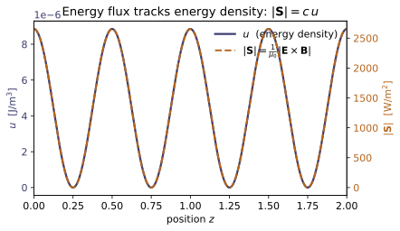
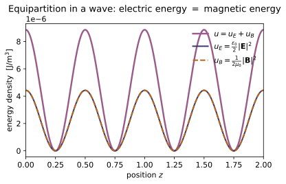
Example problems
A wave travels in $+z$ with $\mathbf E=E_0\cos(kz)\,\hat x$ and $\mathbf B=(E_0/c)\cos(kz)\,\hat y$. Show $$\mathbf S=\frac{E_0^2}{\mu_0 c}\cos^2(kz)\,\hat z,\qquad u=\varepsilon_0E_0^2\cos^2(kz),$$ and hence that $S=c\,u$ at every point (use $1/\mu_0 c=\varepsilon_0 c$). Check: plane_wave_snapshot(E0, k) builds the pair; confirm norm(poynting_vector(E,B)(x,y,z)) equals C * energy_density(E,B)(x,y,z), and that S points along $+\hat z$.
With $\mathbf E=E_0\cos(kz)\,\hat x$ and $\mathbf B=(E_0/c)\cos(kz)\,\hat y$, the cross product uses $\hat x\times\hat y=\hat z$:
For the energy density, $1/c^2=\mu_0\varepsilon_0$ makes the magnetic store equal the electric, $\frac1{2\mu_0}(E_0/c)^2=\tfrac{\varepsilon_0}{2}E_0^2$, so
Dividing, $S/u=(1/\mu_0 c)/\varepsilon_0=1/(\mu_0\varepsilon_0 c)=c$, i.e. $S=c\,u$. For $E_0=1000$ V/m at a crest the code returns $|\mathbf S|=2654$ W/m² and $C\cdot u=2654$ W/m² — equal, with $\mathbf S\parallel+\hat z$.
For any field obeying the plane-wave relation $B=E/c$, show the electric and magnetic contributions to $u$ are equal, $$\tfrac12\varepsilon_0E^2=\frac{1}{2\mu_0}B^2 ,$$ so that $u=\varepsilon_0E^2$. (This equipartition is why the §8 collapses are so tidy.) Check: take $\mathbf E,\mathbf B$ from plane_wave_snapshot, then compare $\tfrac12\varepsilon_0|\mathbf E|^2$ with $|\mathbf B|^2/2\mu_0$; their sum is energy_density(E,B).
The plane-wave relation $B=E/c$ with $c^2=1/\mu_0\varepsilon_0$ turns the magnetic density into the electric one:
The two halves of $u$ are therefore equal, and
Numerically (with $E_0=1000$ V/m) the code reports electric $u_E=4.427\times10^{-6}$ J/m³ equal to magnetic $u_B=4.427\times10^{-6}$ J/m³, summing to $u=8.854\times10^{-6}$ J/m³ = energy_density(E,B).
The solar constant is $S\approx1361\ \mathrm{W/m^2}$. Find the momentum density $g=S/c^2$ carried by the sunlight just above the atmosphere, and the pressure on (a) a perfectly black panel and (b) a perfect mirror. Why does the mirror feel twice the push? Check: momentum_density gives $|\mathbf g|=u/c=S/c^2$; radiation_pressure(1361) returns $S/c$ and radiation_pressure(1361, reflected=True) returns $2S/c$ (a few μPa).
The momentum density is $g=S/c^2=1361/(2.998\times10^8)^2=1.51\times10^{-14}\ \mathrm{kg/(m^2\,s)}$. A black panel absorbs the beam, gaining its momentum at rate $S/c$ per unit area, so
A mirror sends the beam back, reversing the momentum, so it must supply twice the impulse, $P_{\text{refl}}=2S/c=9.08\ \mu\text{Pa}$ — the factor 2 is exactly $\Delta p=2p$ for reflection versus $\Delta p=p$ for absorption. These reproduce radiation_pressure(1361) $=4.54\times10^{-6}$ Pa and radiation_pressure(1361, reflected=True) $=9.08\times10^{-6}$ Pa.
For the $+z$ wave of P1 evaluate $T_{ij}$ and show every off-diagonal entry vanishes while $$T_{xx}=T_{yy}=0,\qquad T_{zz}=-u ,$$ so $-T_{zz}=u$ is exactly the momentum carried per unit area per unit time — the radiation pressure of §8.2.3. (Use the equipartition of P2 to kill the $xx$ and $yy$ diagonals.) Check: maxwell_stress_tensor(E,B)(0,0,0) is symmetric, with T[2][2] equal to -energy_density(E,B)(0,0,0).
Only $E_x$ and $B_y$ are nonzero, so $E^2=E_x^2$, $B^2=B_y^2$, and every product $E_iE_j$ (and $B_iB_j$) vanishes unless $i=j=x$ (resp. $i=j=y$) — so all off-diagonal $T_{ij}=0$. Using equipartition $\tfrac12\varepsilon_0E_x^2=\tfrac1{2\mu_0}B_y^2$ (P2),
and likewise $T_{yy}=-\tfrac12\varepsilon_0E_x^2+\tfrac1{2\mu_0}B_y^2=0$, while
So $\mathbf T=\mathrm{diag}(0,0,-u)$; the code gives the symmetric matrix with T[2][2] $=-8.854\times10^{-6}=-$energy_density(E,B)(0,0,0).
A long straight wire of radius $a$ carries current $I$ with a longitudinal surface field $E_z$ (from the potential drop along it) and an azimuthal $B=\mu_0 I/2\pi a$. Show that at the surface $$\mathbf S=\frac{1}{\mu_0}\,\mathbf E\times\mathbf B$$ points radially inward, with magnitude $|\mathbf S|=E_zB/\mu_0$, and that $\oint\mathbf S\cdot d\mathbf a=I^2R$ — the Joule heat flows into the wire through its sides, carried by the field, not along the wire. Check: at the surface point $(a,0,0)$ take E = lambda x,y,z:(0,0,Ez) and B = lambda x,y,z:(0,Bphi,0); then poynting_vector(E,B)(a,0,0) points along $-\hat x$ (inward). Contrast a static field ($\mathbf B=\mathbf 0$), for which poynting_vector returns 0 — stored energy, no flow.
At $(a,0,0)$ the azimuthal direction is $\hat\phi=\hat y$, so $\mathbf E=E_z\hat z$ and $\mathbf B=B\,\hat y$. With $\hat z\times\hat y=-\hat x$,
radially inward, magnitude $|\mathbf S|=E_zB/\mu_0$. Integrating the inward flux over the side area $2\pi a L$ and inserting $B=\mu_0I/2\pi a$,
since $V=E_zL$ is the potential drop ($V=IR$). The Joule heat enters through the sides, carried by the field. The code returns $\mathbf S(a,0,0)$ along $-\hat x$ (e.g. $(-79.6,0,0)$ for the sample $E_z,B$) and exactly $\mathbf 0$ when $\mathbf B=\mathbf 0$.
Run the worked code: cd EM/EM-14_conservation_laws/code && python3 conservation_laws.py
EM-15 — Electromagnetic Waves
Electricity & Magnetism trunk · EM/EM-15_em_waves · open in the Teaching Network
The payoff of Maxwell's equations ~EM-13: in empty space the four equations combine into the wave equation ∂²f/∂t² = v²∇²f (Eq. 9.2), whose solutions travel at v = ω/k. The simplest is a transverse, monochromatic plane wave — E and B perpendicular to the propagation direction k̂ and to each other, with B locked to E by B = (1/v) k̂×E (Eq. 9.49) and smaller by a factor v. In a linear medium the speed drops to v = c/n with refractive index n = √(ε_r μ_r) (Eq. 9.68); at a normal interface the wave splits into reflected and transmitted parts whose Fresnel amplitudes (Eq. 9.82) carry power fractions R and T that sum to 1. The transverse plane leaves two degrees of freedom — polarization (linear, circular, or elliptical).
A scalar wave is a function f(x, y, z, t), so wave_equation_residual feeds its spatial part to the MA-02 laplacian and differences its time part, returning ~0 exactly when ω = vk — the dispersion relation is checked, not assumed. Amplitudes are MA-01 vectors, so transverse_B is just (1/v) cross(k̂, E₀) and is_transverse is a dot against k̂. This module is the companion to ~EM-13: every plane wave here is a vacuum solution of those equations, and the speed C = 1/√(μ₀ε₀) is assembled from ~EM-01's EPS0 and ~EM-08's MU0. SI units throughout.
Key equations
Figures
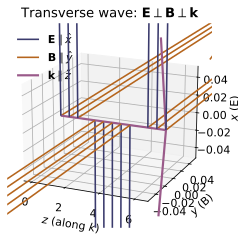
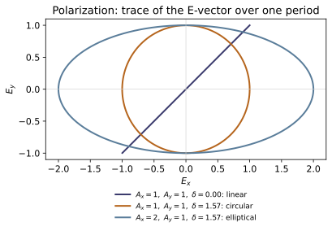
Example problems
Show that $f(z,t)=A\cos(kz-\omega t)$ solves the wave equation $\partial^2 f/\partial t^2=v^2\nabla^2 f$ if and only if $\omega=vk$, and argue that any twice-differentiable $g(z-vt)$ is also a solution (the d'Alembert form). What does $\omega=vk$ say physically about all sinusoidal pieces of a non-dispersive wave? Check: scalar_plane_wave(k, omega) with omega = vk makes wave_equation_residual(f, v, …) $\approx 0$ at any point; feeding the wrong speed (wave_equation_residual(f, 2v, …)) makes the residual $O(1)$.
For $f=A\cos(kz-\omega t)$ the two derivatives pull down a factor each:
Substituting into $\partial_t^2 f=v^2\nabla^2 f$ gives $-\omega^2 f=-v^2k^2 f$, i.e. $\omega^2=v^2k^2\Rightarrow\boxed{\omega=vk}$ — true iff the speed matches. For a general $g(z-vt)$, set $\xi=z-vt$: then $\partial_t^2 g=v^2g''(\xi)$ and $\partial_z^2 g=g''(\xi)$, so $\partial_t^2 g=v^2\partial_z^2 g$ identically (d'Alembert). Physically $\omega=vk$ means the phase velocity $\omega/k=v$ is the same for every frequency: the medium is non-dispersive and a pulse keeps its shape. This is why wave_equation_residual $\approx2.2\times10^{-5}$ (numerically $0$) when omega = vk, but jumps to $\approx0.75=O(1)$ when fed 2v.
For a plane wave with $\mathbf E_0=E_0\,\hat{\mathbf x}$ travelling along $+\hat{\mathbf z}$, use $\nabla\cdot\mathbf E=0$ and Faraday's law to show that both fields are transverse and that $$\mathbf B_0=\frac1c\,\hat{\mathbf k}\times\mathbf E_0,\qquad |\mathbf B_0|=\frac{E_0}{c},$$ so $(\hat{\mathbf E},\hat{\mathbf B},\hat{\mathbf k})$ is right-handed. Which way does $\mathbf B_0$ point? Check: transverse_B((E0,0,0), (0,0,1)) returns a vector along $+\hat{\mathbf y}$ with norm $=E_0/$C; is_transverse confirms both $\mathbf E_0\cdot\hat{\mathbf k}=0$ and $\mathbf B_0\cdot\hat{\mathbf k}=0$.
For $\mathbf E=\mathbf E_0e^{i(\mathbf k\cdot\mathbf r-\omega t)}$ the operators become $\nabla\to i\mathbf k$, $\partial_t\to-i\omega$. Gauss in vacuum, $\nabla\cdot\mathbf E=0$, gives $i\mathbf k\cdot\mathbf E_0=0$, so $\mathbf E_0\perp\hat{\mathbf k}$ (transverse). Faraday $\nabla\times\mathbf E=-\partial\mathbf B/\partial t$ becomes $i\mathbf k\times\mathbf E_0=i\omega\mathbf B_0$, hence
With $\hat{\mathbf k}=\hat{\mathbf z}$ and $\mathbf E_0=E_0\hat{\mathbf x}$, $\hat{\mathbf z}\times\hat{\mathbf x}=\hat{\mathbf y}$, so $\mathbf B_0$ points along $+\hat{\mathbf y}$: $(\hat{\mathbf E},\hat{\mathbf B},\hat{\mathbf k})=(\hat{\mathbf x},\hat{\mathbf y},\hat{\mathbf z})$ is right-handed. For $E_0=1000$ V/m, transverse_B returns $(0,\,3.336\times10^{-6},\,0)$ T, matching $E_0/c=3.336\times10^{-6}$, and is_transverse is True for both fields.
Starting from $\mathbf E=(A_x\,\hat{\mathbf x}+A_y e^{i\delta}\,\hat{\mathbf y})\,e^{i(kz-\omega t)}$, find the conditions on $A_x,A_y,\delta$ for linear, circular, and elliptical polarization, and sketch the tip of the real E over one period for $A_x=A_y$, $\delta=\pi/2$ (a circle) versus $A_x=2A_y$, $\delta=\pi/2$ (an ellipse). Check: classify_polarization(1, 1, math.pi/2) → "circular", classify_polarization(1, 1, 0) → "linear", classify_polarization(2, 1, math.pi/2) → "elliptical".
Taking real parts at $z=0$, the tip of $\mathbf E$ moves as
If $\delta=0$ or $\pi$ then $E_y=\pm(A_y/A_x)E_x$ — a fixed straight line: linear (also linear if one amplitude vanishes). For $\delta=\pi/2$, $E_y=A_y\sin\omega t$, so the tip traces $(A_x\cos\omega t,\,A_y\sin\omega t)$, the ellipse $(E_x/A_x)^2+(E_y/A_y)^2=1$; when $A_x=A_y$ this is a circle of radius $A$. Everything else is a tilted ellipse. So $A_x=A_y,\delta=\pi/2$ gives a circle while $A_x=2A_y,\delta=\pi/2$ gives a 2:1 ellipse — exactly classify_polarization returning "circular", "linear", "elliptical" for the three checks.
Glass has $\varepsilon_r=2.25$ (take $\mu_r\approx1$). Find the index $n$, the phase velocity $v=c/n$, and the wavelength inside the glass of light that is $\lambda_0=500$ nm in vacuum (recall $\omega$ is unchanged at an interface, so $\lambda=\lambda_0/n$). Then show the time-averaged intensity of a vacuum wave is $\langle S\rangle=\tfrac12 c\varepsilon_0 E_0^2$. Check: refractive_index(2.25) $=1.5$ and phase_velocity(2.25) $=$ C$/1.5$; with omega = 2math.piC/500e-9, wavelength(omega, phase_velocity(2.25)) returns $\lambda_0/1.5\approx333$ nm.
The index is $n=\sqrt{\varepsilon_r\mu_r}=\sqrt{2.25}=1.5$, so the phase velocity is $v=c/n=2.998\times10^8/1.5=1.999\times10^8$ m/s. Since $\omega$ (hence the frequency) is conserved across the interface, $\lambda=v/f=(c/n)/(c/\lambda_0)=\lambda_0/n =500/1.5=333.3$ nm. For the intensity, the Poynting vector is $\mathbf S=\frac1{\mu_0}\mathbf E\times\mathbf B$ with $B=E/c$, so $S=\frac{E^2}{\mu_0 c}=c\varepsilon_0E^2$ (using $1/(\mu_0c)=c\varepsilon_0$). Averaging $E^2=E_0^2\cos^2(kz-\omega t)$ over a period gives $\langle\cos^2\rangle=\tfrac12$, hence
This matches refractive_index(2.25)$=1.5$, phase_velocity(2.25)$=$C$/1.5$, and wavelength(...)$=3.333\times10^{-7}$ m $=333.3$ nm.
Light passes from air ($n_1=1$) into glass ($n_2=1.5$) at normal incidence. Compute the Fresnel amplitudes $r=(n_1-n_2)/(n_1+n_2)$ and $t=2n_1/(n_1+n_2)$, then the power coefficients $R=r^2$ and $T=(n_2/n_1)t^2$, and verify $R+T=1$. Explain the sign of $r$ (the $\pi$ phase shift on reflecting off the denser medium) and find the reflectance going the other way, glass → air. Check: fresnel_normal(1, 1.5) $=(-0.2,\,0.8)$; reflectance(1, 1.5) $=0.04$ and transmittance(1, 1.5) $=0.96$ sum to $1$; reflectance(1.5, 1.0) $=0.04$ as well ($|r|^2$ is the same both ways).
With $n_1=1$, $n_2=1.5$ the amplitude coefficients are
The power fractions are $R=r^2=0.04$ and $T=\dfrac{n_2}{n_1}t^2=1.5\times0.64=0.96$, so $R+T=0.04+0.96=1$ — energy is conserved with no absorption. The sign $r<0$ (because $n_2>n_1$) means the reflected $\mathbf E$ is inverted: a $\pi$ phase shift on reflecting off the denser medium. Reversing the trip, glass→air, $r=\dfrac{1.5-1}{2.5}=+0.2$, so $R=(0.2)^2=0.04$ — identical, since $R=|r|^2$ is insensitive to the sign flip. These are exactly fresnel_normal(1,1.5)$=(-0.2,0.8)$, reflectance/transmittance$=0.04/0.96$, and reflectance(1.5,1.0)$=0.04$.
Run the worked code: cd EM/EM-15_em_waves/code && python3 em_waves.py
EM-16 — Waveguides, Cavities & Transmission Lines
Electricity & Magnetism trunk · EM/EM-16_waveguides · open in the Teaching Network
A free plane wave (~EM-15) fills all of space. Confine it to a hollow conductor and the transverse profile can no longer be arbitrary: the walls quantize it into a discrete set of modes $(m,n)$, each with a cutoff angular frequency $$\omega_{mn}=c\pi\sqrt{(m/a)^2+(n/b)^2}\qquad(\text{Eq. 9.186}),$$ for a rectangular guide of cross-section $a\times b$. Above its cutoff a mode propagates, but the guide is dispersive: phase velocity $v_p>c$, group (signal/energy) velocity $v_g<c$, the two locked by $v_p\,v_g=c^2$. Below cutoff the mode is evanescent — it decays as $e^{-\kappa z}$ and carries no power. The lowest cutoff belongs to the dominant $\mathrm{TE}_{10}$ mode. A TEM transmission line (two conductors — e.g. a coax) escapes all of this: it has no cutoff and carries every frequency, down to DC, at $c$.
Key equations
Figures
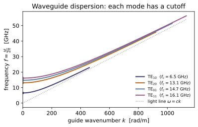
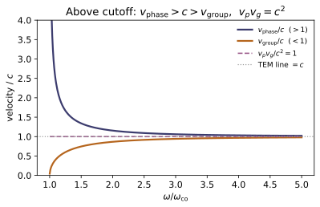
Example problems
For a guide of cross-section $a\times b$ with $a\ge b$, show the $\mathrm{TE}_{mn}$ cutoff is $\omega_{mn}=c\pi\sqrt{(m/a)^2+(n/b)^2}$, and that the lowest is the dominant $\mathrm{TE}_{10}$ with $\omega_{10}=c\pi/a$, i.e. $f_{10}=c/2a$. For WR-90 ($a=22.9$ mm, $b=10.2$ mm) evaluate $f_{10}$ (expect $\approx 6.55$ GHz). Check: cutoff_angular_frequency(1,0,a,b), cutoff_frequency(1,0,a,b), and dominant_mode_cutoff(a,b) (which orders $a,b$ for you).
Separation of variables on the $B_z$ Helmholtz equation gives a transverse profile $\cos(k_x x)\cos(k_y y)$; the wall conditions quantize $k_x=m\pi/a$, $k_y=n\pi/b$. Propagation needs real $k$ in $k=\sqrt{\omega^2/c^2-k_x^2-k_y^2}$, and $k=0$ marks the cutoff:
With $a\ge b$, the smallest nonzero cutoff is $(m,n)=(1,0)$, giving $\omega_{10}=c\pi/a$ and $f_{10}=\omega_{10}/2\pi=c/2a$. For WR-90, $f_{10}=\dfrac{2.998\times10^8}{2(0.0229)}=6.55\text{ GHz}$ — exactly what cutoff_frequency(1,0,a,b) and dominant_mode_cutoff(a,b)/2\pi return ($6.546$ GHz, $\omega_{10}=4.113\times10^{10}$ rad/s).
Take $a=2b$. Show $\omega_{20}=2\omega_{10}$ and $\omega_{01}=c\pi/b=2\omega_{10}$, so above $\omega_{10}$ the guide carries only $\mathrm{TE}_{10}$ until $2\omega_{10}$, where $\mathrm{TE}_{20}$ and $\mathrm{TE}_{01}$ switch on together — a one-octave single-mode band. Check: compare cutoff_angular_frequency for $(1,0),(2,0),(0,1)$, and use is_propagating(1.5*w10, m, n, a, b) to confirm only $\mathrm{TE}_{10}$ propagates at $\omega=1.5\,\omega_{10}$.
With $a=2b$ substitute into $\omega_{mn}=c\pi\sqrt{(m/a)^2+(n/b)^2}$:
So nothing else turns on between $\omega_{10}$ and $2\omega_{10}$: only $\mathrm{TE}_{10}$ carries power across that octave, and at $2\omega_{10}$ the degenerate $\mathrm{TE}_{20}$ and $\mathrm{TE}_{01}$ switch on together. Numerically (with $a=2b$) the code gives $\omega_{20}/\omega_{10}=\omega_{01}/\omega_{10}=2.0$, and at $\omega=1.5\,\omega_{10}$ is_propagating is True for $(1,0)$ but False for $(2,0)$ and $(0,1)$ — confirming the single-mode band.
For a mode of cutoff $\omega_{co}$ driven at $\omega$, show $k=\frac{1}{c}\sqrt{\omega^2-\omega_{co}^2}$ when $\omega>\omega_{co}$, and that for $\omega<\omega_{co}$ the field decays as $e^{-\kappa z}$ with $\kappa=\frac{1}{c}\sqrt{\omega_{co}^2-\omega^2}$ — no propagation, no dissipation. At $\omega=\tfrac12\omega_{co}$ find $\kappa$ (expect $\tfrac{\sqrt3}{2}\, \omega_{co}/c\approx 0.866\,\omega_{co}/c$). Check: guide_wavenumber returns 0 below cutoff and positive above; evanescent_decay is positive below cutoff and 0 above; is_propagating marks the threshold.
The longitudinal wavenumber follows from $\omega^2/c^2=k^2+(\omega_{co}/c)^2$, i.e. $k=\frac1c\sqrt{\omega^2-\omega_{co}^2}$. For $\omega>\omega_{co}$ this is real and the mode propagates as $e^{i(kz-\omega t)}$. For $\omega<\omega_{co}$ the radicand goes negative, $k=i\kappa$ with
so $e^{ikz}=e^{-\kappa z}$ — pure exponential decay, no oscillation and (since $\kappa$ is real, not complex) no Joule loss. At $\omega=\tfrac12\omega_{co}$, $\kappa=\frac1c\sqrt{\omega_{co}^2-\tfrac14\omega_{co}^2}=\frac{\sqrt3}{2}\frac{\omega_{co}}{c}\approx0.866\,\omega_{co}/c$. The code confirms guide_wavenumber$=0$ below cutoff while evanescent_decay$=288.87$ m⁻¹ $=0.866\,\omega_{co}/c$ (for $\omega_{co}=10^{11}$ rad/s).
From $k=\frac{1}{c}\sqrt{\omega^2-\omega_{co}^2}$ derive $v_p=\omega/k=c/\sqrt{1-(\omega_{co}/\omega)^2}$ and (differentiating $\omega^2=c^2k^2+\omega_{co}^2$) $v_g=d\omega/dk=c\sqrt{1-(\omega_{co}/\omega)^2}$. Hence $v_p>c>v_g$ and $v_p\,v_g=c^2$. Explain why $v_p>c$ violates no relativity (a single sinusoid carries no information) while $v_g$ is the energy/signal speed, and show both $\to c$ as $\omega\gg\omega_{co}$. Check: phase_velocity_guide and group_velocity_guide — confirm their product equals C**2 and that each tends to C for $\omega\gg\omega_{co}$.
The phase velocity is $v_p=\omega/k=\omega\big/\frac1c\sqrt{\omega^2-\omega_{co}^2} =\dfrac{c}{\sqrt{1-(\omega_{co}/\omega)^2}}$, which exceeds $c$. Differentiating the dispersion $\omega^2=c^2k^2+\omega_{co}^2$ gives $2\omega\,d\omega=2c^2k\,dk$, so
Their product is $v_p v_g=c^2$ identically. The superluminal $v_p$ is the speed of a pure phase front, which carries no information; energy and signals travel at $v_g<c$, so relativity is safe. As $\omega\gg\omega_{co}$ the radical $\to1$ and both $\to c$. The code confirms $v_p v_g=8.988\times10^{16}=$C**2, and at $\omega=100\,\omega_{co}$ both velocities sit within $10^{-4}$ of C.
Argue that a hollow single-conductor guide cannot carry a TEM ($E_z=B_z=0$) wave, but a coax (two conductors) can; show the TEM mode obeys the free-space dispersion $\omega=ck$ (the Helmholtz constant vanishes), so a coax passes every frequency, down to DC, at $c$ in a vacuum dielectric. Contrast with the cutoff of P3. Check: tem_line_speed() returns C; compare with phase_velocity_guide / group_velocity_guide, which only approach C in the $\omega\gg\omega_{co}$ limit.
A TEM mode has $E_z=B_z=0$, so the transverse field obeys $\nabla\cdot\mathbf E_\perp=0$ and $\nabla\times\mathbf E_\perp=0$ in the cross-section — an electrostatic pattern, the gradient of a potential solving Laplace's equation there. Inside a single hollow conductor the wall is one connected equipotential, forcing the potential constant and $\mathbf E_\perp=0$: a hollow guide carries no TEM wave. A coax has two conductors at different potentials, so a nontrivial radial $\mathbf E$ (and azimuthal $\mathbf B$) lives between them. Setting $E_z=B_z=0$ also kills the Helmholtz constant, $\omega^2/c^2-k^2=0$, so
the free-space dispersion: every frequency, down to DC, travels at $c$. This is the opposite of P3's guided mode, where $\omega^2/c^2-k^2=k_c^2>0$ imposes a cutoff. Hence tem_line_speed()$=c= 2.998\times10^8$ m/s at all frequencies, whereas phase_velocity_guide/group_velocity_guide only approach $c$ in the $\omega\gg\omega_{co}$ limit.
Run the worked code: cd EM/EM-16_waveguides/code && python3 waveguides.py
EM-17 — Radiation
Electricity & Magnetism trunk · EM/EM-17_radiation · open in the Teaching Network
The first time-dependent fields of the trunk. News of a source travels at the finite speed c, so the potentials at r depend on the state of the source at the retarded time $t_r = t - \eta/c$ — one light-travel-time η/c in the past. Feed a moving point charge through that delay and the potentials become the Liénard-Wiechert potentials (Eq. 10.46–10.47), with a $1/(1-\hat{\boldsymbol\eta}\cdot\mathbf v/c)$ "beaming" enhancement. Differentiate them and you find that accelerating charges radiate: the Larmor formula $P=\mu_0 q^2 a^2/(6\pi c)$ (Eq. 11.70) for a slow charge, and electric-dipole radiation with the $\sin^2\theta$ doughnut pattern and total time-averaged power $\langle P\rangle=\mu_0 p_0^2\omega^4/(12\pi c)$ (Eq. 11.22). The retarded potential is itself a Green's-function solution of the wave equation (~MA-14); the radiating dipole is the ~EM-05 dipole set oscillating. SI units throughout; a trajectory is supplied as a function w(t) -> (x,y,z), a velocity as v(t) -> (vx,vy,vz).
Key equations
Figures
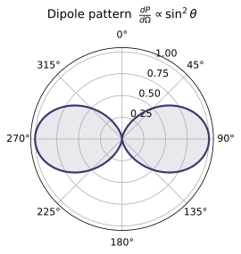
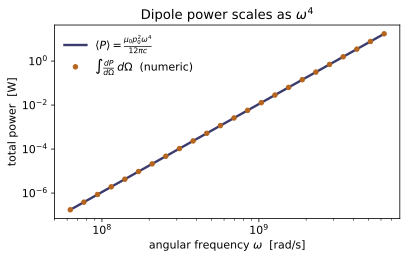
Example problems
A charge sits permanently at the origin; the field point is at distance $r$. Show directly from $t_r=t-\eta(t_r)/c$ that the retarded time is simply $t_r=t-r/c$, independent of $t$, and that the retarded potential is the ordinary Coulomb value $V=q/4\pi\varepsilon_0 r$ — the delay is real but invisible because the source never changed. Check: retarded_time with a constant trajectory returns $t-r/c$; retarded_potential_static returns $(K_E\,q/r,\;t-r/c)$.
The retarded time obeys the implicit condition $t_r=t-\eta(t_r)/c$. For a charge fixed at the origin the separation to the field point never changes, $\eta(t_r)=r$ (constant), so the condition is no longer implicit and solves at once:
the same delay for every $t$. Feeding this unchanging source into the retarded potential (Eq. 10.26), the integrand is just the static Coulomb density, so
The light-travel delay $r/c$ is physically real but invisible, because $\rho$ never changed. This is exactly what retarded_time (constant trajectory) gives, $t-r/c$, and retarded_potential_static returns $(K_E\,q/r,\;t-r/c)$.
Take Eq. 10.46–10.47 and set $\mathbf v=\mathbf 0$. Show the beaming denominator becomes $\eta(1-0)=\eta$, so $V\to q/4\pi\varepsilon_0\eta$ and $\mathbf A=(\mathbf v/c^2)V\to\mathbf 0$: a charge at rest has no vector potential and the static result is recovered. Check: lienard_wiechert with a constant trajectory and zero velocity gives $V=K_E\,q/\eta$ and $|\mathbf A|=0$ (and $t_r=t-\eta/c$).
The Liénard-Wiechert potentials (Eq. 10.46–10.47) are $V=\dfrac{1}{4\pi\varepsilon_0}\dfrac{q}{\eta\,(1-\hat{\boldsymbol\eta}\cdot\mathbf v/c)}$ and $\mathbf A=(\mathbf v/c^2)V$. Setting $\mathbf v=\mathbf 0$ collapses the beaming denominator,
so
A charge at rest carries no vector potential, and $V$ is the ordinary Coulomb value at the retarded separation $\eta$ — the static limit recovered. With a constant zero-velocity trajectory lienard_wiechert returns $V=K_E\,q/\eta$, $|\mathbf A|=0$, and $t_r=t-\eta/c$.
A point charge moves at constant velocity $v=0.6c$ straight along the $+\hat x$ axis toward a field point on that axis. Show that, evaluated at the retarded time, the Liénard-Wiechert potential exceeds the instantaneous Coulomb value $q/4\pi\varepsilon_0\eta$ by the factor $1/(1-\hat{\boldsymbol\eta}\cdot\mathbf v/c)=1/(1-0.6)=2.5$. Confirm $\mathbf A\neq\mathbf 0$ since the charge is moving. Check: lienard_wiechert for vel = 0.6C head-on returns $V$ larger than K_Eq/η at the retarded separation $\eta$, and $|\mathbf A|>0$.
With $\mathbf v=0.6c\,\hat{\mathbf x}$ aimed straight at a field point on the $+\hat x$ axis, the retarded separation points the same way, $\hat{\boldsymbol\eta}=\hat{\mathbf x}$, so $\hat{\boldsymbol\eta}\cdot\mathbf v/c=0.6$. The Liénard-Wiechert $V$ (Eq. 10.46) is the Coulomb value times the beaming factor:
Because $\mathbf v\neq\mathbf 0$, the vector potential $\mathbf A=(\mathbf v/c^2)V\neq\mathbf 0$. Running lienard_wiechert for a head-on $0.6c$ charge returns a potential exceeding the instantaneous $K_E\,q/\eta$ by a ratio of exactly $2.5000$, with $|\mathbf A|=3.60\times10^{-9}>0$.
From $P=\mu_0 q^2 a^2/6\pi c$, show the radiated power is quadratic in the acceleration: doubling $a$ quadruples $P$, while uniform motion ($a=0$) radiates nothing. Estimate the power radiated by an electron ($q=1.602\times10^{-19}$ C) at $a=10^{22}\,\mathrm{m/s^2}$ and confirm it is of order $10^{-10}$ W. Check: larmor_power(q, 2e22)/larmor_power(q, 1e22) $=4$, and larmor_power(1.602e-19, 1e22) $\approx 5.7\times10^{-10}$ W.
Larmor's formula $P=\mu_0 q^2 a^2/6\pi c$ is quadratic in $a$, so scaling $a\to 2a$ multiplies the power by $2^2=4$, while $a=0$ (uniform motion) gives $P=0$ — it is acceleration, not speed, that makes a charge radiate. For an electron at $a=10^{22}\ \mathrm{m/s^2}$,
of order $10^{-10}$ W. This matches larmor_power(q,2e22)/larmor_power(q,1e22)$=4$ and larmor_power(1.602e-19,1e22)$\approx5.71\times10^{-10}$ W.
For $dP/d\Omega=(\mu_0 p_0^2\omega^4/32\pi^2 c)\sin^2\theta$, show (i) the pattern is null on the axis $\theta=0$ and maximal broadside $\theta=\pi/2$; (ii) integrating over the sphere with $\int\sin^2\theta\,d\Omega=8\pi/3$ recovers $\langle P\rangle=\mu_0 p_0^2\omega^4/12\pi c$; (iii) the total scales as $\omega^4$ (Rayleigh / blue sky) and as $p_0^2$. Check: dipole_angular_power(0,p0,ω) $=0$ and is largest at $\pi/2$; total_power_from_pattern(p0,ω) matches dipole_radiated_power(p0,ω) to $<0.1\%$; doubling $\omega$ multiplies dipole_radiated_power by 16 and doubling $p_0$ by 4.
(i) The pattern carries the factor $\sin^2\theta$: it vanishes on the axis ($\sin 0=0$, an exact null along the dipole) and peaks broadside ($\sin\tfrac{\pi}{2}=1$) — the doughnut. (ii) Integrate over the sphere, pulling out the constant prefactor:
(iii) The total scales as $\omega^4$ (Rayleigh's law — high frequencies dominate, so the sky is blue) and as $p_0^2$: doubling $\omega$ multiplies $P$ by $2^4=16$, doubling $p_0$ by $2^2=4$. Numerically dipole_angular_power(0,...)$=0$, the broadside value is largest, total_power_from_pattern matches dipole_radiated_power to a relative $\sim10^{-13}$ ($\ll0.1\%$), and the $\times16$ and $\times4$ scalings hold exactly.
Run the worked code: cd EM/EM-17_radiation/code && python3 radiation.py
EM-18 — Relativistic Electrodynamics
Electricity & Magnetism trunk · EM/EM-18_relativistic_electrodynamics · open in the Teaching Network
The payoff of the whole subject: E and B are not two separate fields but the six independent components of one antisymmetric field tensor F^{μν} (Gr Eq. 12.118). A Lorentz boost mixes them (Eq. 12.109), so a pure electric field in one frame carries a magnetic field in another — magnetism is electrostatics seen from a moving frame (§12.3.1), which is the deep reason a wire that is neutral in the lab can still push on a moving charge.
Two scalar combinations survive every boost: E·B and B²−E²/c² are Lorentz-invariant (Prob. 12.47). And the four Maxwell equations collapse into the single covariant statement ∂_μF^{μν} = μ₀J^ν (§12.3.4). The tensor machinery here is ~MA-16; the covariant viewpoint, shared with the relativity trunk, is ~RE-08.
Key equations
Figures
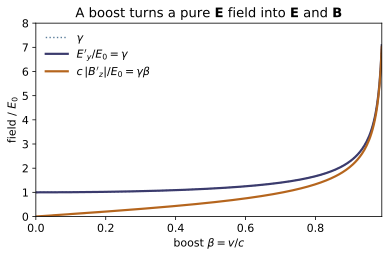
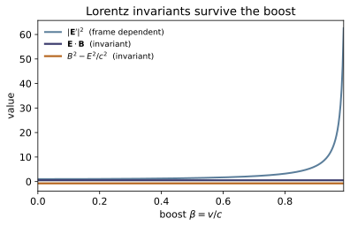
Example problems
For fields E = (E_x, E_y, E_z) and B = (B_x, B_y, B_z), write out F^{μν} in the (ct, x, y, z) ordering, with $F^{0i}=E_i/c$ and $F^{ij}=-\varepsilon_{ijk}B_k$. Show it is antisymmetric, so the diagonal vanishes and only six of the sixteen entries are independent — exactly E and B — and identify which entry holds $B_x$. Check: field_tensor(E, B) then is_antisymmetric returns True; fields_from_tensor returns the original (E, B); confirm $B_x$ sits at $F^{yz}=$ F[2][3].
Filling in $F^{0i}=E_i/c$ for the top row/column and $F^{ij}=-\varepsilon_{ijk}B_k$ for the spatial block,
Antisymmetry $F^{\mu\nu}=-F^{\nu\mu}$ forces each diagonal entry to satisfy $F^{\mu\mu}=-F^{\mu\mu}=0$, so the four diagonal slots vanish; the remaining $16-4=12$ entries are locked in $\pm$ pairs, leaving $6$ independent numbers — the three $E_i/c$ (top row) and the three $B_k$ (spatial block). The spatial $3\times3$ block holds $F^{xy}=B_z$, $F^{xz}=-B_y$, $F^{yz}=B_x$, so $B_x$ lives in the $(y,z)$ slot — row 2, col 3 in the $(ct,x,y,z)$ ordering, i.e. F[2][3]. The code confirms is_antisymmetric $=$ True, fields_from_tensor round-trips (E, B), and F[2][3] $=B_x$.
Take E = $E_0\,\hat{\mathbf y}$ and B = 0 in S. Boost to S′ at v = βc. Show $$\mathbf E'=(0,\;\gamma E_0,\;0),\qquad \mathbf B'=\Big(0,\;0,\;-\gamma\tfrac{v}{c^2}E_0\Big)=-\tfrac{1}{c^2}\,\mathbf v\times\mathbf E',$$ so a transverse electric field acquires a magnetic field that switches off as v → 0 (no magnetism without motion) while the field strengthens by γ. Check: boost_fields((0, E0, 0), (0, 0, 0), beta); compare $B'_z$ to −gamma(beta)·(βc/c²)·E0 and $E'_y$ to gamma(beta)·E0.
Insert $E_x=E_z=0$, $E_y=E_0$, $\mathbf B=0$ into the boost map (Eq. 12.109). The electric components give $E'_x=E_x=0$, $E'_y=\gamma(E_y-vB_z)=\gamma E_0$, $E'_z=\gamma(E_z+vB_y)=0$, so $\mathbf E'=(0,\gamma E_0,0)$. The magnetic components give $B'_x=B_x=0$, $B'_y=\gamma(B_y+\tfrac{v}{c^2}E_z)=0$, and
With $\mathbf v=v\hat{\mathbf x}$ and $\mathbf E'=\gamma E_0\hat{\mathbf y}$, $\;-\tfrac1{c^2}\mathbf v\times\mathbf E'=-\tfrac{v\gamma E_0}{c^2}(\hat{\mathbf x}\times\hat{\mathbf y})=-\gamma\tfrac v{c^2}E_0\,\hat{\mathbf z}$, matching $\mathbf B'$. As $v\to0$ the magnetic field vanishes while $E'_y\to E_0$. For $E_0=1000$ V/m, $\beta=0.6$ ($\gamma=1.25$): $E'_y=1250$ V/m and $B'_z=-2.502\times10^{-6}$ T, exactly what boost_fields((0, E0, 0), (0,0,0), beta) returns.
For arbitrary E, B, show the scalars $$\mathbf E\cdot\mathbf B \qquad\text{and}\qquad B^2-\frac{E^2}{c^2}$$ take the same value in S and S′. (Substitute the §12.3.2 transformation and watch the γ-dependent cross-terms cancel via $\gamma^2(1-v^2/c^2)=1$.) Check: field_invariants(E, B) versus field_invariants(*boost_fields(E, B, beta)) for β = 0.2, 0.5, 0.9, 0.99 — agree to rounding.
Take $\mathbf E'\cdot\mathbf B'=E'_xB'_x+E'_yB'_y+E'_zB'_z$. The $x$-terms are untouched ($E'_xB'_x=E_xB_x$); the transverse pieces are
Expanding, the genuinely mixed terms $\tfrac v{c^2}E_yE_z$ and $-\tfrac v{c^2}E_zE_y$ cancel, as do $-vB_zB_y$ and $+vB_yB_z$, leaving $\gamma^2\big(1-\tfrac{v^2}{c^2}\big)(E_yB_y+E_zB_z)=E_yB_y+E_zB_z$ since $\gamma^2(1-v^2/c^2)=1$. Adding back $E_xB_x$ recovers $\mathbf E\cdot\mathbf B$. The identical cancellation in $B'^2-E'^2/c^2$ leaves it invariant. Numerically field_invariants returns $\mathbf E\cdot\mathbf B=-2.9\times10^{-3}$ and $B^2-E^2/c^2=9.19\times10^{-14}$, unchanged through $\beta=0.2,0.5,0.9,0.99$ — matching field_invariants(*boost_fields(E, B, beta)).
A plane electromagnetic wave has E ⊥ B with $E=cB$, so both invariants vanish: E·B = 0 and B²−E²/c² = 0. Argue that, because the invariants are fixed, no observer can boost into a frame where the wave is purely electric or purely magnetic, and E ⊥ B, |E| = c|B| in every frame. Check: take E = (0, E0, 0), B = (0, 0, E0/C); field_invariants returns ≈ (0, 0); boost with boost_fields and confirm both invariants stay ≈ 0.
For the wave, $\mathbf E\perp\mathbf B$ gives $\mathbf E\cdot\mathbf B=0$, and $E=cB$ gives
so both invariants are zero. By P3 they are zero in every frame: $\mathbf E'\cdot\mathbf B'=0$ keeps $\mathbf E'\perp\mathbf B'$, and $B'^2-E'^2/c^2=0$ keeps $|\mathbf E'|=c|\mathbf B'|$. A "purely electric" frame ($\mathbf B'=0$) would force $B'^2-E'^2/c^2=-E'^2/c^2<0$, and a "purely magnetic" frame ($\mathbf E'=0$) would force $+B'^2>0$ — both contradict the vanishing invariant. So no boost can strip a light wave to one field. With $\mathbf E=(0,E_0,0)$, $\mathbf B=(0,0,E_0/c)$, field_invariants returns $\approx(0,0)$ and stays $\approx(0,0)$ after boost_fields.
Let E = $E_0\,\hat{\mathbf y}$ and B = $B_0\,\hat{\mathbf y}$ be parallel (so E·B = $E_0B_0\neq0$). Show that no boost can make either field vanish: since E·B is invariant and nonzero, neither E′ nor B′ can be zero in any frame. Verify explicitly that the boosted fields E′ = (0, γE_0, γvB_0) and B′ = (0, γB_0, −γ(v/c²)E_0) still satisfy E′·B′ = $E_0B_0$. Check: field_invariants((0, E0, 0), (0, B0, 0)) gives (E0B0, ...); scan β with boost_fields and confirm E·B stays $E_0B_0$ while neither field ever drops to zero — the reason ~RE-08 calls E·B and B²−E²/c² the intrinsic* content of the field.
With $E_x=E_z=0,\ E_y=E_0$ and $B_x=B_z=0,\ B_y=B_0$, the boost map gives
since $E'_z=\gamma(E_z+vB_y)=\gamma vB_0$ and $B'_z=\gamma(B_z-\tfrac v{c^2}E_y)=-\gamma\tfrac v{c^2}E_0$. Their dot product is
Because $\mathbf E'\cdot\mathbf B'=E_0B_0\neq0$ in every frame, neither field can vanish (a zero field would make the product zero). For $E_0=1000$ V/m, $B_0=2\times10^{-6}$ T, field_invariants gives $\mathbf E\cdot\mathbf B=2.0\times10^{-3}=E_0B_0$, and scanning $\beta=0.3,0.6,0.9$ with boost_fields holds $\mathbf E'\cdot\mathbf B'=E_0B_0$ while $|\mathbf E'|,|\mathbf B'|$ stay strictly positive.
Run the worked code: cd EM/EM-18_relativistic_electrodynamics/code && python3 relativistic_electrodynamics.py